drafted part
introduction # what operating systems do = a computer system can be divided roughly into four components - hardware - operating system - application programs - users = operating system manages computer hardware, system programs, application programs and users = an operating system acts as an intermediary between the user of a computer and the computer hardware = operating system is the program running at all times on the computer called the kernel
 = 2 other types of programs along with the kernel are
- system programs (associated with the operating system but are not necessarily part of the kernel)
- application programs (not associated with the operation of the system)
= mobile operating systems often includes a middleware (set of software frameworks provides services to application developers)
# computer-system organization
= 2 other types of programs along with the kernel are
- system programs (associated with the operating system but are not necessarily part of the kernel)
- application programs (not associated with the operation of the system)
= mobile operating systems often includes a middleware (set of software frameworks provides services to application developers)
# computer-system organization
 = computer-system components
- a modern computer system consists of one or more CPUs and a number of device controllers connected through a common bus that provide access to shared memory
- each device controller is in charge of a specific type of device
- CPUs and device controllers can execute in parallel competing for memory cycles
- memory controller synchronizes access to the memory
= computer-system starting
- when a computer powered up or reboot the initial program to execute is bootstrap program
- typically this program is stored with in the computer hardware in ROM - readonly memory or firmware(EEPROM - electronically erasable programmable memory)
- the bootstrap program must locate the operating system kernel and load into memory
- the kernel starts providing services to the system and the users, some services are provided by few external programs
- these external programs are called system programs which is loaded to memory at boot time to become system process or daemons(in unix first daemon is 'init')
= devices and CPU communication(events)
- events are occurred through interrupt mechanism from either the hardware or the software
- hardware may trigger an interrupt at any time by sending a signal to the CPUs usually by way of system bus
- software may trigger an interrupt at any time by executing a special operation called a system call(monitor call)
- when a CPU is interrupted, it stops the current operation and transfers to a fixed location
- that fixed location contains the starting address of service routine for the interrupt
- on completion, the CPU resumes the interrupted computation
= computer-system components
- a modern computer system consists of one or more CPUs and a number of device controllers connected through a common bus that provide access to shared memory
- each device controller is in charge of a specific type of device
- CPUs and device controllers can execute in parallel competing for memory cycles
- memory controller synchronizes access to the memory
= computer-system starting
- when a computer powered up or reboot the initial program to execute is bootstrap program
- typically this program is stored with in the computer hardware in ROM - readonly memory or firmware(EEPROM - electronically erasable programmable memory)
- the bootstrap program must locate the operating system kernel and load into memory
- the kernel starts providing services to the system and the users, some services are provided by few external programs
- these external programs are called system programs which is loaded to memory at boot time to become system process or daemons(in unix first daemon is 'init')
= devices and CPU communication(events)
- events are occurred through interrupt mechanism from either the hardware or the software
- hardware may trigger an interrupt at any time by sending a signal to the CPUs usually by way of system bus
- software may trigger an interrupt at any time by executing a special operation called a system call(monitor call)
- when a CPU is interrupted, it stops the current operation and transfers to a fixed location
- that fixed location contains the starting address of service routine for the interrupt
- on completion, the CPU resumes the interrupted computation
 = storage structure
= storage structure
 - all forms of memory provide an array of bytes and every byte has an address
- main memory mainly implemented in a semiconductor technology called DRAM-dynamic random access memory is called RAM
- SSD, solid state drive is a non-volatile memory and stores data in a DRAM array during normal operation but also contains a hidden magnetic hard disk and a battery
- when external power is interrupted the SSD's controller will copy data from RAM to disk so its becomes non-volatile. when the external power is restored controller copies the data back to RAM
- another non-volatile form is flash memory which doesn't require power to retain its contents and its a variant of EEPROM-electrically erasable programmable read-only memory
- another non-volatile form is NVRAM which is DRAM with battery power
= i/o structure
- all forms of memory provide an array of bytes and every byte has an address
- main memory mainly implemented in a semiconductor technology called DRAM-dynamic random access memory is called RAM
- SSD, solid state drive is a non-volatile memory and stores data in a DRAM array during normal operation but also contains a hidden magnetic hard disk and a battery
- when external power is interrupted the SSD's controller will copy data from RAM to disk so its becomes non-volatile. when the external power is restored controller copies the data back to RAM
- another non-volatile form is flash memory which doesn't require power to retain its contents and its a variant of EEPROM-electrically erasable programmable read-only memory
- another non-volatile form is NVRAM which is DRAM with battery power
= i/o structure

 - every operating system have a device driver for each device controller
- device driver is a software program with which the device controller interacts with the operating system
- device controller is a hardware unit attached to the I/O bus and works like an interface between a device and a device driver
- device controller maintains some local buffer storage and a set of special purpose registers and it is responsible for moving the data between the peripheral devices and its local buffer storage
- each device controller is in charge of a specific type of device
- SCSI-small computer systems interface controller can attach to seven or more devices
- how data movement happens (small amount of data movement)
. Execution cycle finds a user input instruction
. CPU stops the current user process execution and starting the I/O interrupt processing (identify the interrupt routine address from the interrupt vector)
. interrupted device driver loads instructions to appropriate registers on the device controller
. device controller examines the contents of these registers to determine what action to take(like read)
. device controller starts the transfer of data from the I/O device to its local buffer
. device controller informs the device driver via an interrupt that it has finished the operation
. device driver then returns control to the operating system and load data to memory
- how data movement happens (bulk data movement)
. device controller populate local buffers and transfers bulk of data to and from directly to memory
. this movement does not involve CPU and its called direct memory access(DMA)
# computer-system architecture
= execution of instructions
- Von Neumann architecture was first published by John von Neumann in 1945
- every operating system have a device driver for each device controller
- device driver is a software program with which the device controller interacts with the operating system
- device controller is a hardware unit attached to the I/O bus and works like an interface between a device and a device driver
- device controller maintains some local buffer storage and a set of special purpose registers and it is responsible for moving the data between the peripheral devices and its local buffer storage
- each device controller is in charge of a specific type of device
- SCSI-small computer systems interface controller can attach to seven or more devices
- how data movement happens (small amount of data movement)
. Execution cycle finds a user input instruction
. CPU stops the current user process execution and starting the I/O interrupt processing (identify the interrupt routine address from the interrupt vector)
. interrupted device driver loads instructions to appropriate registers on the device controller
. device controller examines the contents of these registers to determine what action to take(like read)
. device controller starts the transfer of data from the I/O device to its local buffer
. device controller informs the device driver via an interrupt that it has finished the operation
. device driver then returns control to the operating system and load data to memory
- how data movement happens (bulk data movement)
. device controller populate local buffers and transfers bulk of data to and from directly to memory
. this movement does not involve CPU and its called direct memory access(DMA)
# computer-system architecture
= execution of instructions
- Von Neumann architecture was first published by John von Neumann in 1945
 - it is based on the stored-program computer concept, where instruction data and program data are stored in the same memory
- interaction with CPU and memory unit is achieved through load and store instructions to specific memory addresses
- load - from main memory to internal registers within the CPU
- store - from internal registers to main memory
- need arises, CPUs explicitly loads instructions from main memory for execution
- instructions are processed via fetch-execute cycle
- CPU can load instruction only from main memory(RAM-random access memory)
- it is based on the stored-program computer concept, where instruction data and program data are stored in the same memory
- interaction with CPU and memory unit is achieved through load and store instructions to specific memory addresses
- load - from main memory to internal registers within the CPU
- store - from internal registers to main memory
- need arises, CPUs explicitly loads instructions from main memory for execution
- instructions are processed via fetch-execute cycle
- CPU can load instruction only from main memory(RAM-random access memory)
 = single processor systems
- one main general purpose processor
- may have many special purpose processor(disk, keyboard and graphics controllers)
= multi processor systems
- 2 or more processors in close communication sharing the computer bus, clock memory and I/O devices also known as parallel systems or multicore systems
- three main advantages are
. increased throughput, speed up ration if N processor is not N but near
. economy of scale, less cost because they share many components(peripherals,storage and power supplies)
. increased reliability, failure of one processor will not halt the system, only slow down thus controlling failing altogether
- 2 types of multiprocessing systems are currently in use
. asymmetric multiprocessing: boss-worker relationship, OS tasks are carried only by the master processor which will allocate work to the worker processor. Sun Microsystems SunOS version 4
. symmetric multiprocessing(SMP): peer relationship, all the processors can take part in the OS tasks based on availability. Sun Microsystems SunOS version 5
= single processor systems
- one main general purpose processor
- may have many special purpose processor(disk, keyboard and graphics controllers)
= multi processor systems
- 2 or more processors in close communication sharing the computer bus, clock memory and I/O devices also known as parallel systems or multicore systems
- three main advantages are
. increased throughput, speed up ration if N processor is not N but near
. economy of scale, less cost because they share many components(peripherals,storage and power supplies)
. increased reliability, failure of one processor will not halt the system, only slow down thus controlling failing altogether
- 2 types of multiprocessing systems are currently in use
. asymmetric multiprocessing: boss-worker relationship, OS tasks are carried only by the master processor which will allocate work to the worker processor. Sun Microsystems SunOS version 4
. symmetric multiprocessing(SMP): peer relationship, all the processors can take part in the OS tasks based on availability. Sun Microsystems SunOS version 5
 . differentiator for asymmetric/symmetric multiprocessing systems are either hardware or software. software can be written to allow only one boss and multiple workers
- terms used for reliability of computer system
. graceful degradation, ability to provide service proportional to the level of surviving hardware
. fault tolerant, hardware and software duplication to ensure continued operation despite failure
- multiprocessing can cause a system to change its memory access model
. UMA-uniform memory access, access to any RAM from any CPU takes same amount of time
. NUMA-non-uniform memory access, access to some part of RAM may takes long amount of time. OS can minimize the NUMA penalty through resource management
- multicore, including multiple computing cores in a single chip
. differentiator for asymmetric/symmetric multiprocessing systems are either hardware or software. software can be written to allow only one boss and multiple workers
- terms used for reliability of computer system
. graceful degradation, ability to provide service proportional to the level of surviving hardware
. fault tolerant, hardware and software duplication to ensure continued operation despite failure
- multiprocessing can cause a system to change its memory access model
. UMA-uniform memory access, access to any RAM from any CPU takes same amount of time
. NUMA-non-uniform memory access, access to some part of RAM may takes long amount of time. OS can minimize the NUMA penalty through resource management
- multicore, including multiple computing cores in a single chip
 . all multicore systems are multiprocessor systems
- blade servers, multiple processor boards and I/O boards and networking boards are placed in the same chassis
. each blade processor boards boots independently and runs its own OS
= clustered systems
- composed of multiple individual systems or nodes or loosely coupled systems
- generally clustered computers share storage and are closely linked via LAN or a faster interconnect such as InfiniBand
- a layer of cluster software runs on the cluster nodes
- each nodes can monitor one or more of the others(over LAN)
- if monitored machine fails, the monitoring machine can take ownership of its storage and restart the applications that were running on the failed machine
- 2 types of clustered systems
. asymmetric clustering, one hot-standby machine will monitor the active server and in case of failure it becomes the active server
. symmetric clustering, 2 or more hosts are running applications and are monitoring each other
- application must written to take advantage of the cluster, involving the technique known as parallelization
. parallelization divides a program into separate components and run in parallel on individual computers in a cluster
. once each node solves its portion, the results from all the nodes are combined into a final solution
- other forms clusters are
. parallel clusters
. clustering over a WAN-wide area network
- parallel clusters allow multiple hosts to access the same data on shared storage
- normal OS won't support simultaneous data access by multiple hosts a special software required for achieving the same. Oracle Real Application Cluster is designed to run on a parallel cluster
- every machine runs Oracle and a layer of software tracks access to the shared disk
- to avoid conflict on data DLM-distributed lock manager is included in cluster technology
- SAN-storage area network technology allows many systems to attach to a pool of storage
- cluster software can assign the application to run on any host that is attached to the SAN
. all multicore systems are multiprocessor systems
- blade servers, multiple processor boards and I/O boards and networking boards are placed in the same chassis
. each blade processor boards boots independently and runs its own OS
= clustered systems
- composed of multiple individual systems or nodes or loosely coupled systems
- generally clustered computers share storage and are closely linked via LAN or a faster interconnect such as InfiniBand
- a layer of cluster software runs on the cluster nodes
- each nodes can monitor one or more of the others(over LAN)
- if monitored machine fails, the monitoring machine can take ownership of its storage and restart the applications that were running on the failed machine
- 2 types of clustered systems
. asymmetric clustering, one hot-standby machine will monitor the active server and in case of failure it becomes the active server
. symmetric clustering, 2 or more hosts are running applications and are monitoring each other
- application must written to take advantage of the cluster, involving the technique known as parallelization
. parallelization divides a program into separate components and run in parallel on individual computers in a cluster
. once each node solves its portion, the results from all the nodes are combined into a final solution
- other forms clusters are
. parallel clusters
. clustering over a WAN-wide area network
- parallel clusters allow multiple hosts to access the same data on shared storage
- normal OS won't support simultaneous data access by multiple hosts a special software required for achieving the same. Oracle Real Application Cluster is designed to run on a parallel cluster
- every machine runs Oracle and a layer of software tracks access to the shared disk
- to avoid conflict on data DLM-distributed lock manager is included in cluster technology
- SAN-storage area network technology allows many systems to attach to a pool of storage
- cluster software can assign the application to run on any host that is attached to the SAN
 # operating-system structure
= OS provides an environment within which programs are executed
= lots of jobs will kept initially on the disk in the job pool
= job is a collection of program + input data + control instructions
# operating-system structure
= OS provides an environment within which programs are executed
= lots of jobs will kept initially on the disk in the job pool
= job is a collection of program + input data + control instructions
 = operating system will bring subset of jobs from job pool to memory since memory is small to accommodate all the jobs
= OS picks and begins to execute one of the job
= some of the types of operating systems
- multiprogramming
- multi tasking/time-sharing
- batch
- multiprocessing
- real-time
= what is multiprogramming
- CPU will continue to execute the job until finishes (non-preemptive) or the job request for some I/O operation
- main purpose of multiprogramming is to make sure that the CPU is always busy
- CPU will have one job at a time
= what is multitaksing or time-sharing
- multitaksing or time-sharing is an extension on multiprogramming
- every job will execute only for a predefined time or CPU scheduling
- CPU will execute a job until time slice reaches (preemptive) or the job request for some I/O operation then start executing the next one
- main purpose of multitasking or time sharing is to make sure that the CPU is always busy and improved response time for every job
- CPU will have one job at a time
- OS will ensure reasonable response time through
. swapping, processes swapped in and out of memory to disk
. virtual memory, a technique that allows the execution of program that is larger than physical memory size
. file system
. disk management
. protecting resources from inappropriate use
. job synchronization and communication
. handling deadlocks
= what is multiprocessing
- multi processor(CPU) systems
- any CPU will have one job at a time
= objective of multiprogramming and time-sharing
- multiprogramming: maximum CPU utilization
- time-sharing : maximum CPU utilization + maximize users interaction with programs
# operating-system operations
= operating systems are interrupt driven
= events are always signaled by the occurrence of an interrupt or a trap
= trap is a software generated interrupt caused by an error(divide by zero) or by a specific request from a user program
= dual-mode and multimode operation
- a system should distinguish between the execution of operating system code and user defined code
- most popular approach is to provide hardware support
- 2 separate modes of operations are
. kernel mode (also called supervisor mode, system mode, privileged mode), 0 the mode bit
. user mode, 1 the mode bit
- a bit(mode bit) is added to the hardware to indicate the mode kernel(0) or user(1)
- with the mode bit we can distinguish between a task that is executed on behalf of the operating system or the user
- when a computer system is executing on behalf of the user application the system is in user mode
- user application requests a service from the operating system via a system call the system will transition to kernel mode
= operating system will bring subset of jobs from job pool to memory since memory is small to accommodate all the jobs
= OS picks and begins to execute one of the job
= some of the types of operating systems
- multiprogramming
- multi tasking/time-sharing
- batch
- multiprocessing
- real-time
= what is multiprogramming
- CPU will continue to execute the job until finishes (non-preemptive) or the job request for some I/O operation
- main purpose of multiprogramming is to make sure that the CPU is always busy
- CPU will have one job at a time
= what is multitaksing or time-sharing
- multitaksing or time-sharing is an extension on multiprogramming
- every job will execute only for a predefined time or CPU scheduling
- CPU will execute a job until time slice reaches (preemptive) or the job request for some I/O operation then start executing the next one
- main purpose of multitasking or time sharing is to make sure that the CPU is always busy and improved response time for every job
- CPU will have one job at a time
- OS will ensure reasonable response time through
. swapping, processes swapped in and out of memory to disk
. virtual memory, a technique that allows the execution of program that is larger than physical memory size
. file system
. disk management
. protecting resources from inappropriate use
. job synchronization and communication
. handling deadlocks
= what is multiprocessing
- multi processor(CPU) systems
- any CPU will have one job at a time
= objective of multiprogramming and time-sharing
- multiprogramming: maximum CPU utilization
- time-sharing : maximum CPU utilization + maximize users interaction with programs
# operating-system operations
= operating systems are interrupt driven
= events are always signaled by the occurrence of an interrupt or a trap
= trap is a software generated interrupt caused by an error(divide by zero) or by a specific request from a user program
= dual-mode and multimode operation
- a system should distinguish between the execution of operating system code and user defined code
- most popular approach is to provide hardware support
- 2 separate modes of operations are
. kernel mode (also called supervisor mode, system mode, privileged mode), 0 the mode bit
. user mode, 1 the mode bit
- a bit(mode bit) is added to the hardware to indicate the mode kernel(0) or user(1)
- with the mode bit we can distinguish between a task that is executed on behalf of the operating system or the user
- when a computer system is executing on behalf of the user application the system is in user mode
- user application requests a service from the operating system via a system call the system will transition to kernel mode
 . migration of integer A from disk to register
. migration of integer A from disk to register
 = I/O systems
- managing and hiding the peculiarities of specific hardware devices through I/O subsystem
- I/O subsystem consists of
. memory management components including buffering, caching and spooling
. general device-driver interface
. device-driver for specific hardware devices
= I/O systems
- managing and hiding the peculiarities of specific hardware devices through I/O subsystem
- I/O subsystem consists of
. memory management components including buffering, caching and spooling
. general device-driver interface
. device-driver for specific hardware devices
 # protection and security
= a computer with multiple users and executing multiple process, then access to data needs to be regulated
= protection is any mechanism for controlling the access of processes or users of the resources defined by a computer system
# computing environments
= traditional computing
= mobile computing
= distributed systems
= client server computing
= peer-to-peer computing
= virtualization
= cloud computing
= real time embedded systems
# protection and security
= a computer with multiple users and executing multiple process, then access to data needs to be regulated
= protection is any mechanism for controlling the access of processes or users of the resources defined by a computer system
# computing environments
= traditional computing
= mobile computing
= distributed systems
= client server computing
= peer-to-peer computing
= virtualization
= cloud computing
= real time embedded systems
operating-system structures # operating-system service
 = services provides functions that are helpful for the users
- user interface
. command line interface(CLI)
* command interpreter
* uses text commands
* method for entering the commands (keyboard)
. batch interface
* commands and directives to control these commands are entered into files
* execute these files
. graphical user interface(GUI)
* a window for selecting from menu
* keyboard for entering the text
- program execution
. load the program to memory and execute
- I/O operation
. user can't control I/O directly due to efficiency and protection
. running program requires I/O
- file-system manipulation
. running program needs to read and write files and directories
- communication
. one process needs to pass information with another process on same machine or another machine that may connected together by a computer network
. communication may be implemented through shared memory or message passing
- error detection
. error may occur in the CPU, memory hardware, I/O device, user program
. OS needs to take appropriate action like halting error-causing process or halt the system
= services provides functions that are helpful for the efficient operation of the system
- resource allocation
. resource should be allocated to every user and every process running in OS
- accounting
. keep track of which users use how much and what resources
- protection and security
. owners of the information which is stored in a multiuser or a computer networked environment needs to control the use of that information
# user and operating-system interface
= command interpreter or CLI
- through CLI users can interface with OS
- some OS include command interpreter in kernel
- windows and UNIX treat the command interpreter as a special program
- interpreter known as shells
- UNIX have bourne shell, c shell, bourne-again shell, korn shell
- main function of the shell is to execute the user specified commands
- these commands are implements in 2 different ways
. bundle the command code along with command interpreter
. command code as system programs(UNIX implemented). in unix 'rm file.txt', search and execute the file named 'rm' and 'file.txt' as the parameter
- historically Mac OS has not provided a command line interface, however in the later releases both CLI and GUI are bundled
= graphical user interface(GUI)
- through GUI users can interface with OS
- its have a user friendly interface mouse based window-and-menu system characterized by a desktop metaphor
- GUI first appeared in Xerox Alto computer in 1973
- popularized through apple macintosh from 1980
- microsoft windows 1.0 was based on the addition of a GUI interface to the MS-DOS OS
- unix includes common desktop environment (CDE), X-windows systems, KDE, GNOME
- apple includes Aqua with Max OS x
= mobile and tablet devices implemented 'gestures' on touch screen for the interaction with OS like pressing, swiping fingers across the screen
# system calls
= system call provide an interface to the services made available by operating system
= these calls generally available as routines in c, c++
= but certain low level tasks are written in assembly language instructions
= list of system calls for reading a file contents and write to another file
= services provides functions that are helpful for the users
- user interface
. command line interface(CLI)
* command interpreter
* uses text commands
* method for entering the commands (keyboard)
. batch interface
* commands and directives to control these commands are entered into files
* execute these files
. graphical user interface(GUI)
* a window for selecting from menu
* keyboard for entering the text
- program execution
. load the program to memory and execute
- I/O operation
. user can't control I/O directly due to efficiency and protection
. running program requires I/O
- file-system manipulation
. running program needs to read and write files and directories
- communication
. one process needs to pass information with another process on same machine or another machine that may connected together by a computer network
. communication may be implemented through shared memory or message passing
- error detection
. error may occur in the CPU, memory hardware, I/O device, user program
. OS needs to take appropriate action like halting error-causing process or halt the system
= services provides functions that are helpful for the efficient operation of the system
- resource allocation
. resource should be allocated to every user and every process running in OS
- accounting
. keep track of which users use how much and what resources
- protection and security
. owners of the information which is stored in a multiuser or a computer networked environment needs to control the use of that information
# user and operating-system interface
= command interpreter or CLI
- through CLI users can interface with OS
- some OS include command interpreter in kernel
- windows and UNIX treat the command interpreter as a special program
- interpreter known as shells
- UNIX have bourne shell, c shell, bourne-again shell, korn shell
- main function of the shell is to execute the user specified commands
- these commands are implements in 2 different ways
. bundle the command code along with command interpreter
. command code as system programs(UNIX implemented). in unix 'rm file.txt', search and execute the file named 'rm' and 'file.txt' as the parameter
- historically Mac OS has not provided a command line interface, however in the later releases both CLI and GUI are bundled
= graphical user interface(GUI)
- through GUI users can interface with OS
- its have a user friendly interface mouse based window-and-menu system characterized by a desktop metaphor
- GUI first appeared in Xerox Alto computer in 1973
- popularized through apple macintosh from 1980
- microsoft windows 1.0 was based on the addition of a GUI interface to the MS-DOS OS
- unix includes common desktop environment (CDE), X-windows systems, KDE, GNOME
- apple includes Aqua with Max OS x
= mobile and tablet devices implemented 'gestures' on touch screen for the interaction with OS like pressing, swiping fingers across the screen
# system calls
= system call provide an interface to the services made available by operating system
= these calls generally available as routines in c, c++
= but certain low level tasks are written in assembly language instructions
= list of system calls for reading a file contents and write to another file
 = even a simple program will make heavy use of OS and systems will execute 1000nds of system calls per second
= application programmer design programs according to the application programming interface(API)
= difference between API and system call
- API helps to exchange data between various systems, devices and applications
- system call allows a program to access services from the kernel of the operation system
= even a simple program will make heavy use of OS and systems will execute 1000nds of system calls per second
= application programmer design programs according to the application programming interface(API)
= difference between API and system call
- API helps to exchange data between various systems, devices and applications
- system call allows a program to access services from the kernel of the operation system
 - behind the scene the functions that make up an API typically invoke the actual system calls on behalf of the application programmer
- most common APIs are
. Windows API
. POSIX API for POSIX based systems(UNIX, Linux, and Mac OS X)
. Java API runs on JVMs
- programmer access the API via library of code provided by OS. incase of Unix and Linux the library called 'libc'
- each OS has its own name for each system call
- why application programmer prefer programming according to API
. program portability(programs using API suppose to be break free even on different architecture machines)
= exercise, get the list of system calls in windows, linux, mac and unix ?
# types of system calls
= process control
= file manipulation
= device manipulation
= information maintenance
= communications
= protection
# system programs
= provide a convenient environment for program development and execution
# operating-system debugging
= debugging is the activity of finding and fixing errors and bugs(performance problems) both in hardware and software
= when process fails,
- error information will be written to a file, log file
- memory of the process will be written to a file, core dump. memory is referred to as 'core' in early days
= a failure in kernel is called crash. when crash occurs,
- error information is saved to a file, log file
- memory state will be written to a file, crash dump
= dumps can be probed by a debugger
= performance tuning, to improve performance by removing processing bottlenecks
= to identify bottlenecks
- we need to monitor system performance
- we need to have a methods of computing and displaying measures of system behavior
= solaris 10 new generation kernel enabled performance analysis tool, DTrace, dynamic tracing facility
= DTrace will dynamically adds probes to a running user processes and in the kernel
# operating-system generation
= in order to design to run at variety of sites with a variety of peripheral configurations 'sysgen' program is executed
= this 'sysgen' program reads from a given file
= given file will have all the component details
- what CPU is to be used
- how will the boot disk tbe formatted
- how many memory is available
- what devices are available
- what OS options are desired(how many buffers and of what size, CPU-scheduling algorithm, max number of processes to be supported)
= with these data, OS is then completely recompiled and can implement an OS specifically for a site
# system boot
= the procedure of loading the kernel into memory is known as booting
= a small piece of code known as bootstrap program
- runs diagnostics to determine the state of the machine
- initialize all aspects of the system(from CPU registers to device controllers)
- locates the kernel
- loads the kernel to memory
- starts execution
= the bootstrap program will be on ROM and its called 'firmware'
= firmware, because its characteristics fall somewhere between those of hardware and those of software
= GRUB is an example of an open-source bootstrap program for linux systems
= a disk that has a boot partition is called boot disk or system disk
- behind the scene the functions that make up an API typically invoke the actual system calls on behalf of the application programmer
- most common APIs are
. Windows API
. POSIX API for POSIX based systems(UNIX, Linux, and Mac OS X)
. Java API runs on JVMs
- programmer access the API via library of code provided by OS. incase of Unix and Linux the library called 'libc'
- each OS has its own name for each system call
- why application programmer prefer programming according to API
. program portability(programs using API suppose to be break free even on different architecture machines)
= exercise, get the list of system calls in windows, linux, mac and unix ?
# types of system calls
= process control
= file manipulation
= device manipulation
= information maintenance
= communications
= protection
# system programs
= provide a convenient environment for program development and execution
# operating-system debugging
= debugging is the activity of finding and fixing errors and bugs(performance problems) both in hardware and software
= when process fails,
- error information will be written to a file, log file
- memory of the process will be written to a file, core dump. memory is referred to as 'core' in early days
= a failure in kernel is called crash. when crash occurs,
- error information is saved to a file, log file
- memory state will be written to a file, crash dump
= dumps can be probed by a debugger
= performance tuning, to improve performance by removing processing bottlenecks
= to identify bottlenecks
- we need to monitor system performance
- we need to have a methods of computing and displaying measures of system behavior
= solaris 10 new generation kernel enabled performance analysis tool, DTrace, dynamic tracing facility
= DTrace will dynamically adds probes to a running user processes and in the kernel
# operating-system generation
= in order to design to run at variety of sites with a variety of peripheral configurations 'sysgen' program is executed
= this 'sysgen' program reads from a given file
= given file will have all the component details
- what CPU is to be used
- how will the boot disk tbe formatted
- how many memory is available
- what devices are available
- what OS options are desired(how many buffers and of what size, CPU-scheduling algorithm, max number of processes to be supported)
= with these data, OS is then completely recompiled and can implement an OS specifically for a site
# system boot
= the procedure of loading the kernel into memory is known as booting
= a small piece of code known as bootstrap program
- runs diagnostics to determine the state of the machine
- initialize all aspects of the system(from CPU registers to device controllers)
- locates the kernel
- loads the kernel to memory
- starts execution
= the bootstrap program will be on ROM and its called 'firmware'
= firmware, because its characteristics fall somewhere between those of hardware and those of software
= GRUB is an example of an open-source bootstrap program for linux systems
= a disk that has a boot partition is called boot disk or system disk
processes
 # process concept
= process is program in execution or runtime picture of a program
= process can be called a job or a task
= process contains following sections
# process concept
= process is program in execution or runtime picture of a program
= process can be called a job or a task
= process contains following sections
 - text section : code and value of processor's registers
- data section : global variables
- heap section : area for dynamic allocation
- stack section : temporary data area(function parameter, return address and local variables)
= a program become process when the program loaded in to memory
= 2 common techniques for loading executable files to memory
- double clicking an icon representing the executable file
- entering the name of the executable file on CLI
= process itself can be a running environment for code, JVM process, java code is executed inside JVM
= as a process executes, it changes state, in one of the following
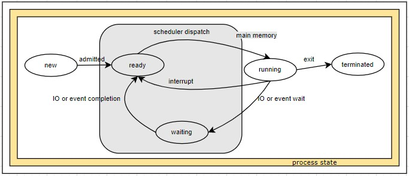
- new, the process is being created
- ready, waiting to get the processor
- running, instruction is being executed
- terminated, process finished execution
- waiting, for some event to occur(IO completion or reception of a signal)
= each process is represented in the OS by a process control block(PCB, task control block)
= PCB is a data structure used by OS to store all the information about a process
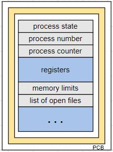
- process state : new, running, terminated, etc
- process number or id
- program counter : address of the next instruction to be executed for this process
- registers : accumulator, index registers, stack pointer, general purpose register and any condition code information. PC and other state information needs to be registered when an interrupt occurs.
- CPU scheduling information : process priority, pointers to scheduling queues and other scheduling parameter
- memory management information : bas and limit registers and page tables or segment tables
- accounting information
- IO status information : list of IO devices allocated to the process, list of open files
# process scheduling
= process scheduler select an available process for execution on the CPU
= processes entering to the system will put into a job queue
= 2 type of queues are present
- processes residing in main memory(ready and waiting) are kept on a list called 'ready queue'
- processes waiting for a particular IO device is called a 'device queue'. each device has its own queue.
= data structure for ready queue is generally on linked list
= head part contains pointers to the first PCB and tail part contains pointers to the final PCB on ready queue header
= each PCB includes a pointer field that points to the next PCB in the ready queue
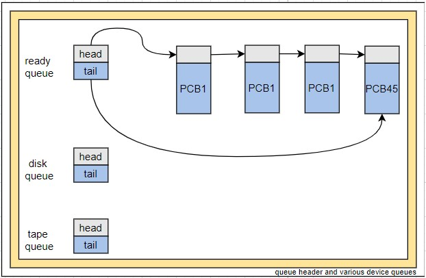
= process is getting allocated to CPU from ready queue
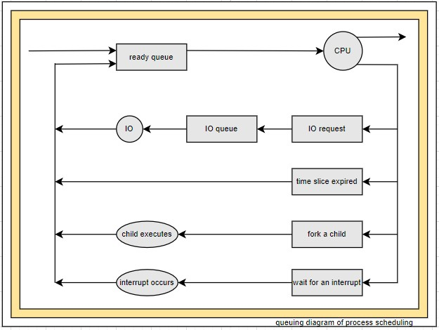
= process migrate among various scheduling queues throughout its life time. OS must select processes from these queues
= the selection process is carried out by the appropriate 'process schedulers'
= 3 type of schedulers are
- long term scheduler, select the process from job pool(typically from mass storage) and loads to memory
- medium term scheduler, to remove a process from main memory to secondary memory(swap out) and later reintroduced to main memory from secondary memory(swap in)
- short term scheduler, select for CPU execution
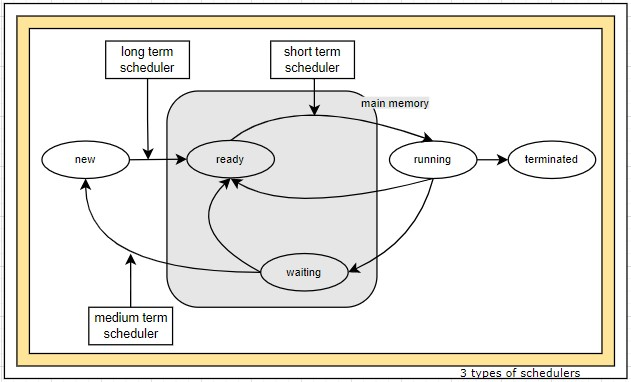
= 'frequency of execution' is the differentiation factor between schedulers
- often short term scheduler will execute once every 100 milliseconds
- ofter long term scheduler will execute once in minutes and so
= 2 types of processes
- IO bound process, more time spent on IO than on computation
- CPU bound process, more time doing computation and generate infrequent IO request
= lond term scheduler needs to select a good process mix but short term scheduler will have little to do
= UNIX and Windows often no long term scheduler instead put every new process in memory for the short term scheduler
= an alternative is medium term scheduler, will remove process from memory and later this can be reintroduced for execution, this scheme is called swapping
= context switch
= altering user task and kernel task is frequent in general purpose system
= when an interrupt occurs, the current 'context' of the process running on the CPU is saved
= context is represented in PCB of the process
= 'context switching', performing the 'state save' and 'state restore'
= context switching is an overhead on systems
= Sun UltraSparc provides multiple sets of registers, so context switching is just pointing to a different register set
# operations on processes
= process creation
- during the course of execution, a process may create several new processes
- every process will be identified with a unique number called process identifier(pid)
- process creator process is called parent process
- new process is called child process
- when a process creates a new process, 2 possibilities exists
. the parent continues to execute concurrently with the child
. the parent wait for the child to get terminated
- address space is a range of valid addresses in memory that are available for a process
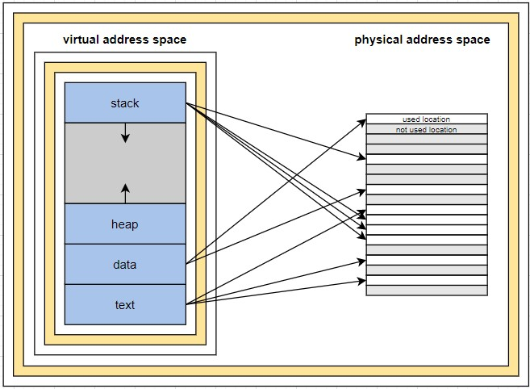
- 2 address space possibilities for a new process
. child is a duplicate of parent process, so it has the same program and data as the parent
. child process has a new program got loaded into it
- UNIX way of new process creation
. process are created by fork() in UNIX in that a parent creates creates a new child process
. contents of new process's address space will be a copy of parent process's address space
. since both address spaces are identical, its difficult to identify parent and child process
. return value of fork() is useful for finding the parent and child process (pid = fork())
* pid = 0 in child process
* pid = nonzero in parent process
explaining forking with example
. both process will continue to execute at the very next instruction after the fork() code line
. exec() system call loads a binary file into memory and starts execution
. after exit the child process the parent process will re-start again
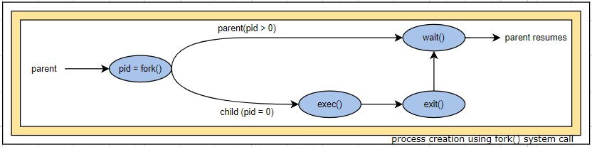
- Windows way of new process creation
. process are created in the Windows API using CreateProcess() function
. the child process will be loading a specified program into its address space
= process termination
- child process finishes (exit() system call) its execution and return the status value to the parent process
- exit() will deallocate or closes all the open files, IO buffers and virtual and physical memory ie PCB removed by the OS
- parent process will be waiting (wait() system call)
- functions of wait() system call in 2 different situations
. if at least one child process running and the wait() call made, then the caller will wait until that child exit() its process
. if there is no child process is running and the wait call made, then it will have no effect
- child process will pass its identity to parent process
- only parent can initiate a termination system call (TerminateProcess()) to avoid inappropriate use
- a parent can initiate the termination process due to
. child exceed the resource usage
. task assigned to child is no longer required
. OS will not allow the child to continue when its parent exited, this phenomenon is referred to as 'cascading termination'
- normal termination circumstances are
. directly by exit() system call
. indirectly by return from main() function call
- process table, is a data structure maintained by the OS to facilitate context switching, scheduling and other activities
- process table is an array of PCBs
- each entry in the table is called 'context block'
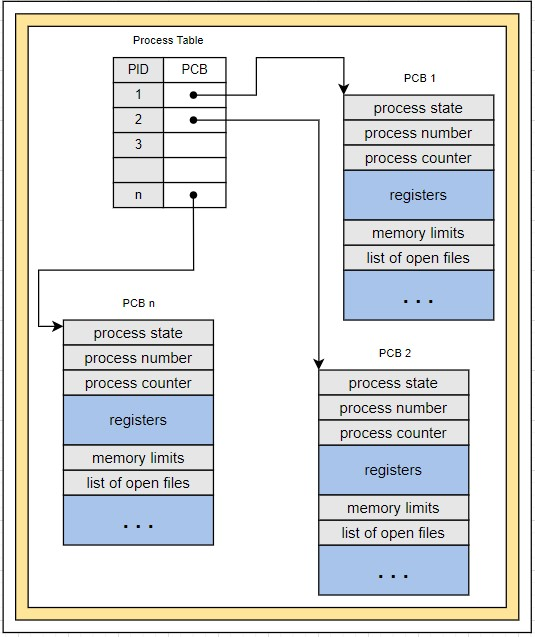
- even after the exit() call the entry in the process table will remain until parent calls wait(), since this table contains process exit status
- a process that is terminated and parent not yet called the wait() is known as 'zombie'
- process identifier of the zombie process ans its entry in the process table are released
- if the parent not invoked the wait() call but the child terminated these processes are called 'orphans'
- Linux and UNIX address this scenario by assigning the init process as the new parent to orphan processes
- init will invoke wait() periodically to collect exit status of the orphaned process and releasing the orphan's process identifier and process table-entry
# interprocess communication
= 2 types of process are
- independent process, no data sharing with other process
- cooperating process, data sharing with other process
= cooperating process require an interprocess communication(IPC) mechanism to exchange data and information
= 2 models of IPC
- message passing, sharing takes place by means of message exchange
- shared memory, region of memory is shared between cooperating process
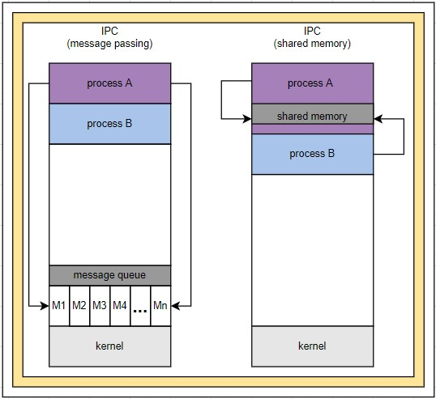
= both models are common in OS
= message passing is easy for
- small amount of data sharing
- distributed systems
= message passing require more system calls compared to shared memory as this requires system call only to establish shared memory region
= on single core systems, preferred model is shared memory
= on multi core systems, preferred model is message passing. shared memory model suffers from cache coherency issues
= cache coherency, ensures that changes to the values of shared operands are propagated across the system in a timely manner
= shared memory model
- communicating process(process A in picture) will establish a region to share with other processes
- usually, a shared memory region resides in the address space of the process that creates the shared memory segment
- other process wish to communicate using this shared memory segment must attach it to their address space
- OS will prevent one process to access other processes memory
- shared memory requires that 2 or more process agree to remove this restriction
- common paradigm for illustrate the concept of cooperating processes is producer-consumer problem
. compiler produces assembly code and consumed by assembler
. assembler produces object modules and consumed by loader
. server produces web pages and browser reads those web pages
- producer will create a buffer in its own address spaces
- producer and consumer will agree to read and write to this buffer
- producer and consumer must be synchronized
- 2 types of buffers
. unbounded buffer, no practical limit on the size of the buffer
* producer can always produce items
* consumer must wait if the buffer is empty
. bounded buffer, fixed buffer size
* producer must wait if the buffer is full
* consumer must wait if the buffer is empty
= message passing model
- process should send a message and other process should receive it
- a communication link needs to establish for the above communication
- few methods for implementing this communication link
. direct and indirect communication
. synchronous or asynchronous communication
. automatic or explicit buffering
- direct communication
. create an identity(name) for the sender and receiver
. every pair will have exactly one link
. one variant, sender and receiver process uses others name to communicate, symmetry
. another variant, only sender uses receivers name for communication, asymmetry
. this method can be termed as hard coding technique
- indirect communication
. messages are sent to and receive from mailboxes or ports
. each mailbox has a unique identification
. every pair will have a shared mailbox
. mailbox may be owned by either OS or by a process(part of address space)
. if the owner of the mail box terminates, then the mail box also needs to be terminated
- synchronous or asynchronous communication
. send and receive of messages are 2 primitives for this message passing model
. message passing may be either blocking(synchronous) or non blocking(asynchronous)
* blocking send, send the next message only after the completion of the current message is delivered
* non blocking send, send the message irrespective of delivery status
* blocking receive, wait until the message is available
* non blocking receive, keep the receiving loop always on
- automatic or explicit buffering
. messages are exchanged through a queue
* zero capacity(no buffering), no waiting in queue
* bounded capacity(automatic buffering), queue has finite length. sender must stop producing if its full
* unbounded capacity(automatic buffering), queue has in-finite length. sender can keep producing
# communication in client–server systems
= 3 other process communication techniques apart from message passing and shared memory
- sockets
- remote procedure calls(RPCs)
- pipes
= socket, is defined as an endpoint for communication
- socket communication is considered a very low level form of communication between distributed processes
- a pair of process communicating over a network employs a pair of sockets, one for each process
- each socket is identified with an IP address concatenated with a port number
- a host machine is referring to itself with an IP address of 127.0.0.1 called loopback
- socket uses a client server architecture
- server waits for incoming client requests on a port
- once a request is received, the server accepts a connection from the client socket to complete the connection
- server implement specific services to listen to on well know ports
- port, is a logical construct that identifies a specific process
- well known ports are, all the ports below 1024(telnet on port 23, ftp on 21, HTTP on 80)
- when a client process initiates a request for a connection, host machine assigns a port
- host machine will assign an arbitrary number greater than 1024 as the port
- socket allow only an unstructured stream of bytes to be exchanged and server and client application to impose a structure on the data
= remote procedure calls
- RPC communication is considered a high level form of communication between distributed processes
- this method uses a message based communication scheme to provide remote service
- message exchanged in RPC communication are well structured and are no longer just packets of data
- message to the server(service) is
. addressed to an RPC daemon listening to a port on the remote system
. an identifier specifying the function to execute and the parameters to pass to that function
- message response to the client is
. output will be send to the client in a separate message
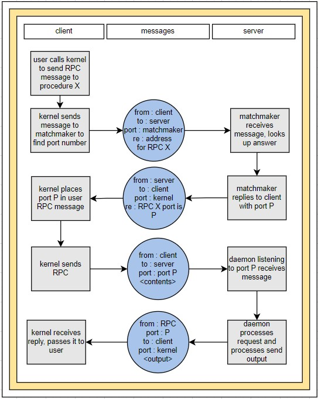
= pipes
- pipe acts as a conduit/channel allowing 2 processes to communicate
- one of the simplest way for IPC
- implementation points to consider
. pipe is unidirectional or bi-directional
. if bi-directional
* half-duplex(data can travel only one way at a time)
* full-duplex(data can travel both ways at same time)
. should a parent-child relationship exist before communication
. communication over a network is possible
- ordinary pipes
. communication in a producer-consumer fashion in unidirectional model with a parent and child relationship
. producer writes to one end of the pipe and consumer reads from the other end
. 2 pipes required for implementing bi-directional communication
. UNIX treats a pipe as a special type of file
. parent process creates pipe and fork() ing a child, so the child will have access to pipe created by parent
. ordinary pipe can only be used for processes with a machine
. once the process has finished communication and terminated the ordinary pipe ceases to exist
. 'ls | more' in UNIX and 'dir | more' in Windows
- named pipes
. communication will be in bi-directional model with out any parent-child relationship
. once a named pipe is established, several processes can use it for communication
. in a typical scenario, a named pipe can have several writers
. even after the communicating processes have finished the named pipe continue to exist
- text section : code and value of processor's registers
- data section : global variables
- heap section : area for dynamic allocation
- stack section : temporary data area(function parameter, return address and local variables)
= a program become process when the program loaded in to memory
= 2 common techniques for loading executable files to memory
- double clicking an icon representing the executable file
- entering the name of the executable file on CLI
= process itself can be a running environment for code, JVM process, java code is executed inside JVM
= as a process executes, it changes state, in one of the following
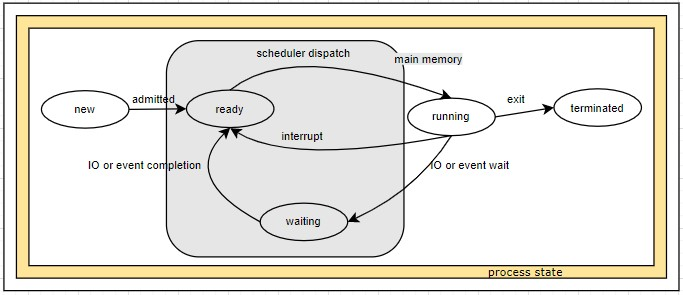
- new, the process is being created
- ready, waiting to get the processor
- running, instruction is being executed
- terminated, process finished execution
- waiting, for some event to occur(IO completion or reception of a signal)
= each process is represented in the OS by a process control block(PCB, task control block)
= PCB is a data structure used by OS to store all the information about a process
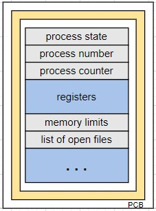
- process state : new, running, terminated, etc
- process number or id
- program counter : address of the next instruction to be executed for this process
- registers : accumulator, index registers, stack pointer, general purpose register and any condition code information. PC and other state information needs to be registered when an interrupt occurs.
- CPU scheduling information : process priority, pointers to scheduling queues and other scheduling parameter
- memory management information : bas and limit registers and page tables or segment tables
- accounting information
- IO status information : list of IO devices allocated to the process, list of open files
# process scheduling
= process scheduler select an available process for execution on the CPU
= processes entering to the system will put into a job queue
= 2 type of queues are present
- processes residing in main memory(ready and waiting) are kept on a list called 'ready queue'
- processes waiting for a particular IO device is called a 'device queue'. each device has its own queue.
= data structure for ready queue is generally on linked list
= head part contains pointers to the first PCB and tail part contains pointers to the final PCB on ready queue header
= each PCB includes a pointer field that points to the next PCB in the ready queue
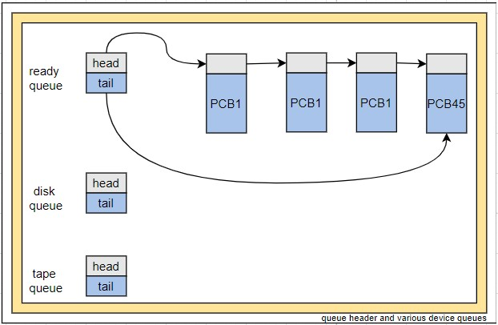
= process is getting allocated to CPU from ready queue
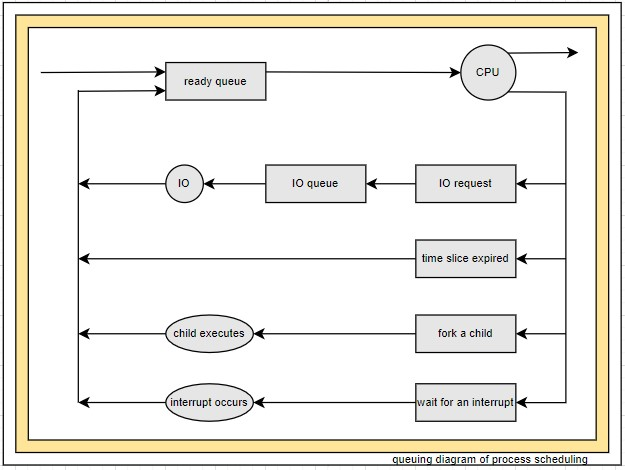
= process migrate among various scheduling queues throughout its life time. OS must select processes from these queues
= the selection process is carried out by the appropriate 'process schedulers'
= 3 type of schedulers are
- long term scheduler, select the process from job pool(typically from mass storage) and loads to memory
- medium term scheduler, to remove a process from main memory to secondary memory(swap out) and later reintroduced to main memory from secondary memory(swap in)
- short term scheduler, select for CPU execution
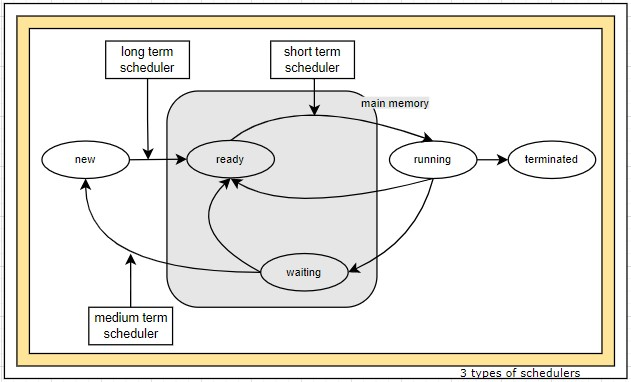
= 'frequency of execution' is the differentiation factor between schedulers
- often short term scheduler will execute once every 100 milliseconds
- ofter long term scheduler will execute once in minutes and so
= 2 types of processes
- IO bound process, more time spent on IO than on computation
- CPU bound process, more time doing computation and generate infrequent IO request
= lond term scheduler needs to select a good process mix but short term scheduler will have little to do
= UNIX and Windows often no long term scheduler instead put every new process in memory for the short term scheduler
= an alternative is medium term scheduler, will remove process from memory and later this can be reintroduced for execution, this scheme is called swapping
= context switch
= altering user task and kernel task is frequent in general purpose system
= when an interrupt occurs, the current 'context' of the process running on the CPU is saved
= context is represented in PCB of the process
= 'context switching', performing the 'state save' and 'state restore'
= context switching is an overhead on systems
= Sun UltraSparc provides multiple sets of registers, so context switching is just pointing to a different register set
# operations on processes
= process creation
- during the course of execution, a process may create several new processes
- every process will be identified with a unique number called process identifier(pid)
- process creator process is called parent process
- new process is called child process
- when a process creates a new process, 2 possibilities exists
. the parent continues to execute concurrently with the child
. the parent wait for the child to get terminated
- address space is a range of valid addresses in memory that are available for a process
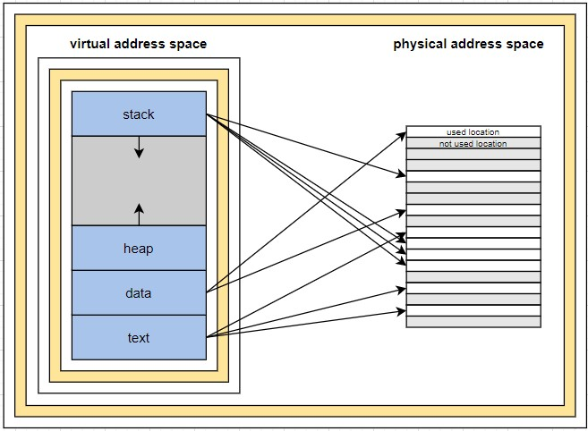
- 2 address space possibilities for a new process
. child is a duplicate of parent process, so it has the same program and data as the parent
. child process has a new program got loaded into it
- UNIX way of new process creation
. process are created by fork() in UNIX in that a parent creates creates a new child process
. contents of new process's address space will be a copy of parent process's address space
. since both address spaces are identical, its difficult to identify parent and child process
. return value of fork() is useful for finding the parent and child process (pid = fork())
* pid = 0 in child process
* pid = nonzero in parent process
explaining forking with example
. both process will continue to execute at the very next instruction after the fork() code line
. exec() system call loads a binary file into memory and starts execution
. after exit the child process the parent process will re-start again
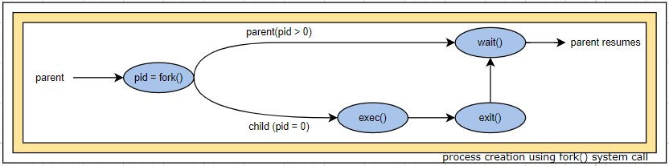
- Windows way of new process creation
. process are created in the Windows API using CreateProcess() function
. the child process will be loading a specified program into its address space
= process termination
- child process finishes (exit() system call) its execution and return the status value to the parent process
- exit() will deallocate or closes all the open files, IO buffers and virtual and physical memory ie PCB removed by the OS
- parent process will be waiting (wait() system call)
- functions of wait() system call in 2 different situations
. if at least one child process running and the wait() call made, then the caller will wait until that child exit() its process
. if there is no child process is running and the wait call made, then it will have no effect
- child process will pass its identity to parent process
- only parent can initiate a termination system call (TerminateProcess()) to avoid inappropriate use
- a parent can initiate the termination process due to
. child exceed the resource usage
. task assigned to child is no longer required
. OS will not allow the child to continue when its parent exited, this phenomenon is referred to as 'cascading termination'
- normal termination circumstances are
. directly by exit() system call
. indirectly by return from main() function call
- process table, is a data structure maintained by the OS to facilitate context switching, scheduling and other activities
- process table is an array of PCBs
- each entry in the table is called 'context block'
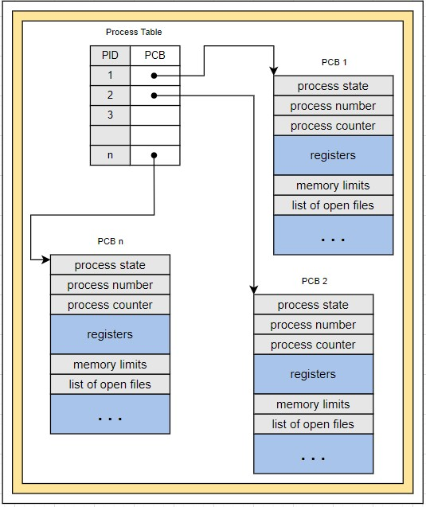
- even after the exit() call the entry in the process table will remain until parent calls wait(), since this table contains process exit status
- a process that is terminated and parent not yet called the wait() is known as 'zombie'
- process identifier of the zombie process ans its entry in the process table are released
- if the parent not invoked the wait() call but the child terminated these processes are called 'orphans'
- Linux and UNIX address this scenario by assigning the init process as the new parent to orphan processes
- init will invoke wait() periodically to collect exit status of the orphaned process and releasing the orphan's process identifier and process table-entry
# interprocess communication
= 2 types of process are
- independent process, no data sharing with other process
- cooperating process, data sharing with other process
= cooperating process require an interprocess communication(IPC) mechanism to exchange data and information
= 2 models of IPC
- message passing, sharing takes place by means of message exchange
- shared memory, region of memory is shared between cooperating process
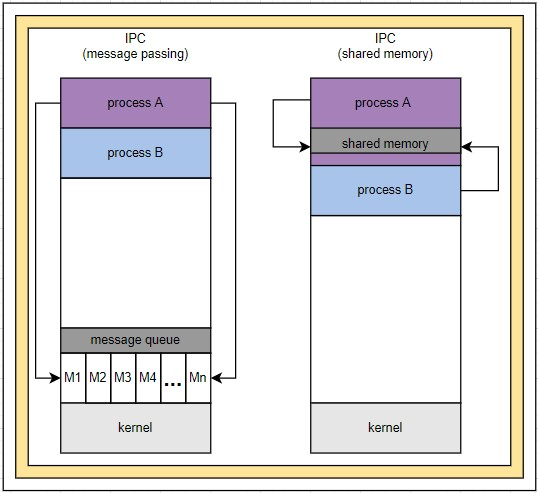
= both models are common in OS
= message passing is easy for
- small amount of data sharing
- distributed systems
= message passing require more system calls compared to shared memory as this requires system call only to establish shared memory region
= on single core systems, preferred model is shared memory
= on multi core systems, preferred model is message passing. shared memory model suffers from cache coherency issues
= cache coherency, ensures that changes to the values of shared operands are propagated across the system in a timely manner
= shared memory model
- communicating process(process A in picture) will establish a region to share with other processes
- usually, a shared memory region resides in the address space of the process that creates the shared memory segment
- other process wish to communicate using this shared memory segment must attach it to their address space
- OS will prevent one process to access other processes memory
- shared memory requires that 2 or more process agree to remove this restriction
- common paradigm for illustrate the concept of cooperating processes is producer-consumer problem
. compiler produces assembly code and consumed by assembler
. assembler produces object modules and consumed by loader
. server produces web pages and browser reads those web pages
- producer will create a buffer in its own address spaces
- producer and consumer will agree to read and write to this buffer
- producer and consumer must be synchronized
- 2 types of buffers
. unbounded buffer, no practical limit on the size of the buffer
* producer can always produce items
* consumer must wait if the buffer is empty
. bounded buffer, fixed buffer size
* producer must wait if the buffer is full
* consumer must wait if the buffer is empty
= message passing model
- process should send a message and other process should receive it
- a communication link needs to establish for the above communication
- few methods for implementing this communication link
. direct and indirect communication
. synchronous or asynchronous communication
. automatic or explicit buffering
- direct communication
. create an identity(name) for the sender and receiver
. every pair will have exactly one link
. one variant, sender and receiver process uses others name to communicate, symmetry
. another variant, only sender uses receivers name for communication, asymmetry
. this method can be termed as hard coding technique
- indirect communication
. messages are sent to and receive from mailboxes or ports
. each mailbox has a unique identification
. every pair will have a shared mailbox
. mailbox may be owned by either OS or by a process(part of address space)
. if the owner of the mail box terminates, then the mail box also needs to be terminated
- synchronous or asynchronous communication
. send and receive of messages are 2 primitives for this message passing model
. message passing may be either blocking(synchronous) or non blocking(asynchronous)
* blocking send, send the next message only after the completion of the current message is delivered
* non blocking send, send the message irrespective of delivery status
* blocking receive, wait until the message is available
* non blocking receive, keep the receiving loop always on
- automatic or explicit buffering
. messages are exchanged through a queue
* zero capacity(no buffering), no waiting in queue
* bounded capacity(automatic buffering), queue has finite length. sender must stop producing if its full
* unbounded capacity(automatic buffering), queue has in-finite length. sender can keep producing
# communication in client–server systems
= 3 other process communication techniques apart from message passing and shared memory
- sockets
- remote procedure calls(RPCs)
- pipes
= socket, is defined as an endpoint for communication
- socket communication is considered a very low level form of communication between distributed processes
- a pair of process communicating over a network employs a pair of sockets, one for each process
- each socket is identified with an IP address concatenated with a port number
- a host machine is referring to itself with an IP address of 127.0.0.1 called loopback
- socket uses a client server architecture
- server waits for incoming client requests on a port
- once a request is received, the server accepts a connection from the client socket to complete the connection
- server implement specific services to listen to on well know ports
- port, is a logical construct that identifies a specific process
- well known ports are, all the ports below 1024(telnet on port 23, ftp on 21, HTTP on 80)
- when a client process initiates a request for a connection, host machine assigns a port
- host machine will assign an arbitrary number greater than 1024 as the port
- socket allow only an unstructured stream of bytes to be exchanged and server and client application to impose a structure on the data
= remote procedure calls
- RPC communication is considered a high level form of communication between distributed processes
- this method uses a message based communication scheme to provide remote service
- message exchanged in RPC communication are well structured and are no longer just packets of data
- message to the server(service) is
. addressed to an RPC daemon listening to a port on the remote system
. an identifier specifying the function to execute and the parameters to pass to that function
- message response to the client is
. output will be send to the client in a separate message
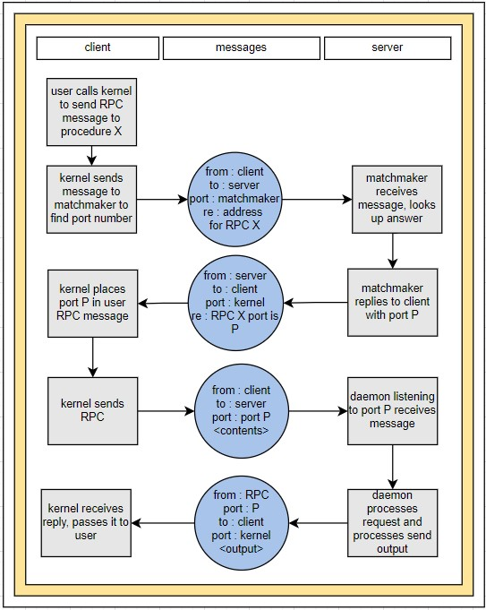
= pipes
- pipe acts as a conduit/channel allowing 2 processes to communicate
- one of the simplest way for IPC
- implementation points to consider
. pipe is unidirectional or bi-directional
. if bi-directional
* half-duplex(data can travel only one way at a time)
* full-duplex(data can travel both ways at same time)
. should a parent-child relationship exist before communication
. communication over a network is possible
- ordinary pipes
. communication in a producer-consumer fashion in unidirectional model with a parent and child relationship
. producer writes to one end of the pipe and consumer reads from the other end
. 2 pipes required for implementing bi-directional communication
. UNIX treats a pipe as a special type of file
. parent process creates pipe and fork() ing a child, so the child will have access to pipe created by parent
. ordinary pipe can only be used for processes with a machine
. once the process has finished communication and terminated the ordinary pipe ceases to exist
. 'ls | more' in UNIX and 'dir | more' in Windows
- named pipes
. communication will be in bi-directional model with out any parent-child relationship
. once a named pipe is established, several processes can use it for communication
. in a typical scenario, a named pipe can have several writers
. even after the communicating processes have finished the named pipe continue to exist
threads
# overview
= a thread of execution is the smallest sequence of programmed instructions that can be managed independently by a scheduler
= 1 or more threads are executing on a processes address space
= a sequence of control within a process
= it is not 'thread' but 'threaded process', process with single thread or multiple threads
= thread is a basic unit of CPU utilization
= a thread includes its own
- thread ID
- program counter
- register set
- stack
= a thread shares the following with other threads in the same process
- code section
- data section
- other OS resources (such as open files and signals)
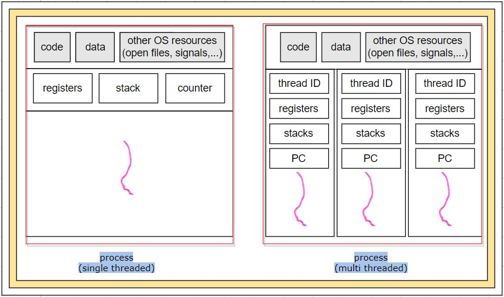
= traditional process is also known as heavyweight process and it has only a single thread of control
= a web server process will have multiple threads
- one thread display text or images
- another thread retrieves data from network
= 2 ways of handling client requests on a web server
- web server run as a singlethreaded process to listen requests. when the server receives a request it creates a separate process to service that request. this process-creation method is time consuming and resource intensive
- web server run as multithreaded process and create separate threads to service new requests
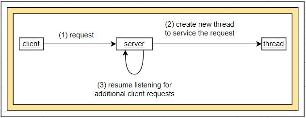
= several threads operate in most of the operating system kernel, each thread performs a specific task such as managing devices, managing memory or interrupt handling
= benefits of threads
- responsiveness, when a user clicks a button
. on a single threaded application, the application will be nonresponsive until the user request is completed
. on a multithreaded application, the application will be responsive as the user request is working as a new thread and application another
- resource sharing, process share the resources to multiple threads on the same address space
- economy, allocating memory and resources for process creation is costly. in solaris process creation is about thirty times slower than thread creation
- scalability, single threaded process can run only on one processor but multithread process can run on multiple processors on multicore systems
# multicore programming
= multicore is a microprocessor on a single integrated circuit with 2 or more separate processing unit called cores
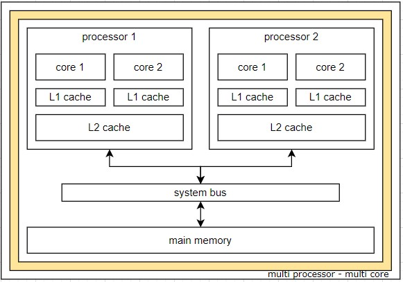
= sequential, concurrency and parallelism
- sequential, a task is a unit. after completing one task, start another task
- concurrency, a slice of a task is a unit. CPU scheduler switches rapidly between processes for execution so that every process will have progress
- parallel, a slice of a task is a unit. if it can execute more than one task simultaneously
 = opportunities for the programmers in multicore systems
- identifying of tasks that are independent of one another and can run in parallel on individual cores
- balancing on the identified tasks which will do equal work of equal value so that the cores are occupied equally
- data splitting like the application is divided to tasks even the data needed to be divided as per the tasks
- data dependency, execution of tasks needs to be synchronized if the data is depended on other tasks
- testing and debugging, all the execution paths needs to be tested
= types of parallelism
- data parallelism, same task and a subset of data set are distributed among multiple cores. distribution of data among multiple cores
- task parallelism, different tasks and a subset of data set/different data set are distributed among multiple cores. distribution of tasks among multiple cores
= most applications use hybrid approach on selecting types of parallelism
= support for threads can be provided in
- user level (user thread), managed by thread library in user space and with out kernel support
- kernel level (kernel thread), managed directly by operating system
# multithreading models
= many to one
- maps many user threads to a kernel thread
- disadvantage is one long running IO request to kernel will block entire process
- only one thread can access the kernel at a time so multicore advantages can't be used
= one to one
- maps each user thread to kernel thread
- multicore advantages can be used
- windows and linux systems have implemented this model
= many to many
- many user level threads to a smaller or equal number of kernel threads
= two-level
- hybrid of many to many and one to one
- many user level threads to a smaller or equal number of kernel threads
- but also allows one to one
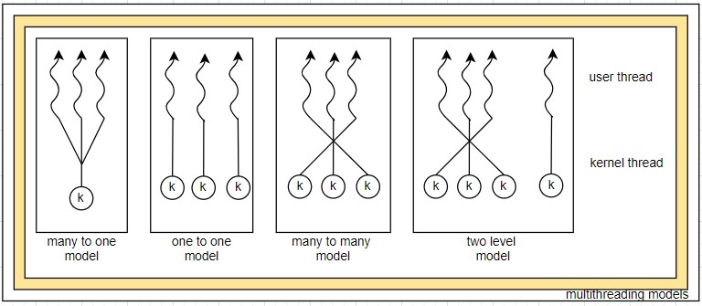
# thread libraries
= thread libraries provides the programmer with an API for creating and managing threads
= 2 ways for implementing a thread libraries
- provide a library entirely in user space without kernel support. code and data structures are in kernel space. invoking a function in the library results a local call not a system call
- provide a kernel level library supported directly by OS. code and data structure are in user space. invoking a function in the API typically results a system call
= 3 main thread libraries
- Pthread (POSIX thread), provided as either a user level or a kernel level library. this is POSIX specification not implementation
- windows, provided as a kernel level library
- Java, library calls to JVM but internally call to host OS
= 2 general strategies for creating multiple threads
- synchronous threading
. parent creates one or more children and waits for all the children to finish execution then resume operation
. parent is depended by children are independent
. fork-join strategy
. eg, parent thread may combine the results calculated by its various children
- asynchronous threading
. parent creates one or more children and both execute concurrently
. parent and children threads are independent
. ideally a very little data sharing
= opportunities for the programmers in multicore systems
- identifying of tasks that are independent of one another and can run in parallel on individual cores
- balancing on the identified tasks which will do equal work of equal value so that the cores are occupied equally
- data splitting like the application is divided to tasks even the data needed to be divided as per the tasks
- data dependency, execution of tasks needs to be synchronized if the data is depended on other tasks
- testing and debugging, all the execution paths needs to be tested
= types of parallelism
- data parallelism, same task and a subset of data set are distributed among multiple cores. distribution of data among multiple cores
- task parallelism, different tasks and a subset of data set/different data set are distributed among multiple cores. distribution of tasks among multiple cores
= most applications use hybrid approach on selecting types of parallelism
= support for threads can be provided in
- user level (user thread), managed by thread library in user space and with out kernel support
- kernel level (kernel thread), managed directly by operating system
# multithreading models
= many to one
- maps many user threads to a kernel thread
- disadvantage is one long running IO request to kernel will block entire process
- only one thread can access the kernel at a time so multicore advantages can't be used
= one to one
- maps each user thread to kernel thread
- multicore advantages can be used
- windows and linux systems have implemented this model
= many to many
- many user level threads to a smaller or equal number of kernel threads
= two-level
- hybrid of many to many and one to one
- many user level threads to a smaller or equal number of kernel threads
- but also allows one to one
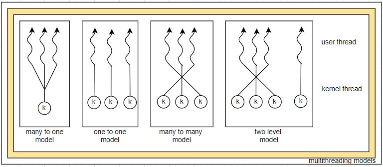
# thread libraries
= thread libraries provides the programmer with an API for creating and managing threads
= 2 ways for implementing a thread libraries
- provide a library entirely in user space without kernel support. code and data structures are in kernel space. invoking a function in the library results a local call not a system call
- provide a kernel level library supported directly by OS. code and data structure are in user space. invoking a function in the API typically results a system call
= 3 main thread libraries
- Pthread (POSIX thread), provided as either a user level or a kernel level library. this is POSIX specification not implementation
- windows, provided as a kernel level library
- Java, library calls to JVM but internally call to host OS
= 2 general strategies for creating multiple threads
- synchronous threading
. parent creates one or more children and waits for all the children to finish execution then resume operation
. parent is depended by children are independent
. fork-join strategy
. eg, parent thread may combine the results calculated by its various children
- asynchronous threading
. parent creates one or more children and both execute concurrently
. parent and children threads are independent
. ideally a very little data sharing
 # implicit threading
= let compiler creates and manages the threads instead of application developers
= 3 alternative approaches are
- thread pools
. create a number of threads at process startup, place them into a pool and threads will wait for work
. when a server receives a request, it awakens a thread from the pool
. once a thread completes its services, it returns to the pool
. if no thread is available in the pool, the server waits until one becomes free
- openMP
. it is a set of compiler directives as well as an API for programmers written in C,C++ and fortran
. provide support in shared memory environment
. openMP identifies parallel regions as blocks of code that may run in parallel
. application programmer insert compiler directives into their code at parallel regions
. these directives will instruct openMP run-time library to execute those regions in parallel
. openMP is available on several open source and commercial compilers for Linux, windows and Mac OS X systems
- grand central dispatch
. a technology for Apple's MAC OS X and iOS OS
. it is a combination of C language, an API and a run-time library
. GCD manages the details of threads like openMP
. GCD directives mark a block as a self contained unit of work
- Intel's threading building blocks(TBB)
- java.util.concurrent
# threading issues
= the fork() and exec() system calls
- fork() call will duplicate parent process
- some UNIX systems chosen to have 2 versions of fork()
. new forked process will have all the threads duplicated
. new forked process will have only one thread duplicated, ie the invoking thread
- exec() call will invoke a new program
- if a thread calls exec()
. replace entire process including all threads
- consideration issues is that which fork() version needs to be selected
- if fork() is followed by an exec() then duplicating all threads are unnecessary
- if fork() is not followed by an exec() then duplicating all the threads are necessary
= signal handling
- signal : event generated by the software that are running in the CPU, signal is used in UNIX to notify the process that an event has occurred
- steps of signal
. a signal is generated by the occurrence of a particular event
* illegal memory access or division by zero
* terminating process by pressing ctrl+c or timer expire
. signal is delivered to a process synchronously or asynchronously
* synchronous, generation of an event and consumption of the signal by same process
* asynchronously, generated by an external event and consumption of the signal by another process
. handling the signal by the process, handled by one or two possible handlers
* default signal handler
* user-defined signal handler
- a default signal handler is associated with every signal and it might take a default action like
. terminate the process
. ignore the signal
. dump core
. stop the process
. continue the stopped process
- user defined signal handler, will overrides default action
- signal can be delivered in a multithreaded environment
. to the thread to which the signal applies
. to every thread in the process
. to certain threads in the process
. assign a specific thread to receive all the signals for the process
= thread cancellation
- terminating a thread before it has completed
- the thread to be cancelled is called target thread
- cancellation can be of 2 scenarios
. asynchronous cancellation, one thread immediately terminates target thread
. deferred cancellation, the target thread periodically checks whether it should terminate
= thread local storage
- thread needs its own copy of data which is called TLS
- thread unique id is stored in TLS
= scheduler activations
- for implementing many to many and two level models a data structure is placed between user threads and kernel threads and this data structure is called light weight process(LWP)
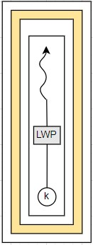
- LWP can be considered as a virtual processor on which application can schedule a usr thread to run
- an application may require any number of LWPs to run efficiently
- CPU bound application running on a single processor(one thread) require one LWP but IO intensive application may require multiple LWPs to execute
- one scheme for communication between user thread library and the kernel is known as scheduler activation
- kernel must inform application about certain events and this procedure is known as 'upcall'. upcalls are handled by the thread library with an upcall handler which is running on the LWP
- one event that triggers an upcall occurs when an application thread is about to block
- kernel then makes an upcall to the application informing it that a thread is about to block and identifying the specific thread
- kernel then allocates a new LWP to the application
# extra
= difference between signals and interrupts
- signal : event generated by the software that are running in the CPU
- interrupt : event generated by the external components other than CPU
= POSIX : Portable Operating System Interface is a family of standards specified by the IEEE Computer Society for maintaining compatibility between OSs
# implicit threading
= let compiler creates and manages the threads instead of application developers
= 3 alternative approaches are
- thread pools
. create a number of threads at process startup, place them into a pool and threads will wait for work
. when a server receives a request, it awakens a thread from the pool
. once a thread completes its services, it returns to the pool
. if no thread is available in the pool, the server waits until one becomes free
- openMP
. it is a set of compiler directives as well as an API for programmers written in C,C++ and fortran
. provide support in shared memory environment
. openMP identifies parallel regions as blocks of code that may run in parallel
. application programmer insert compiler directives into their code at parallel regions
. these directives will instruct openMP run-time library to execute those regions in parallel
. openMP is available on several open source and commercial compilers for Linux, windows and Mac OS X systems
- grand central dispatch
. a technology for Apple's MAC OS X and iOS OS
. it is a combination of C language, an API and a run-time library
. GCD manages the details of threads like openMP
. GCD directives mark a block as a self contained unit of work
- Intel's threading building blocks(TBB)
- java.util.concurrent
# threading issues
= the fork() and exec() system calls
- fork() call will duplicate parent process
- some UNIX systems chosen to have 2 versions of fork()
. new forked process will have all the threads duplicated
. new forked process will have only one thread duplicated, ie the invoking thread
- exec() call will invoke a new program
- if a thread calls exec()
. replace entire process including all threads
- consideration issues is that which fork() version needs to be selected
- if fork() is followed by an exec() then duplicating all threads are unnecessary
- if fork() is not followed by an exec() then duplicating all the threads are necessary
= signal handling
- signal : event generated by the software that are running in the CPU, signal is used in UNIX to notify the process that an event has occurred
- steps of signal
. a signal is generated by the occurrence of a particular event
* illegal memory access or division by zero
* terminating process by pressing ctrl+c or timer expire
. signal is delivered to a process synchronously or asynchronously
* synchronous, generation of an event and consumption of the signal by same process
* asynchronously, generated by an external event and consumption of the signal by another process
. handling the signal by the process, handled by one or two possible handlers
* default signal handler
* user-defined signal handler
- a default signal handler is associated with every signal and it might take a default action like
. terminate the process
. ignore the signal
. dump core
. stop the process
. continue the stopped process
- user defined signal handler, will overrides default action
- signal can be delivered in a multithreaded environment
. to the thread to which the signal applies
. to every thread in the process
. to certain threads in the process
. assign a specific thread to receive all the signals for the process
= thread cancellation
- terminating a thread before it has completed
- the thread to be cancelled is called target thread
- cancellation can be of 2 scenarios
. asynchronous cancellation, one thread immediately terminates target thread
. deferred cancellation, the target thread periodically checks whether it should terminate
= thread local storage
- thread needs its own copy of data which is called TLS
- thread unique id is stored in TLS
= scheduler activations
- for implementing many to many and two level models a data structure is placed between user threads and kernel threads and this data structure is called light weight process(LWP)
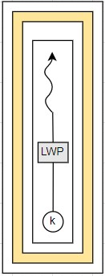
- LWP can be considered as a virtual processor on which application can schedule a usr thread to run
- an application may require any number of LWPs to run efficiently
- CPU bound application running on a single processor(one thread) require one LWP but IO intensive application may require multiple LWPs to execute
- one scheme for communication between user thread library and the kernel is known as scheduler activation
- kernel must inform application about certain events and this procedure is known as 'upcall'. upcalls are handled by the thread library with an upcall handler which is running on the LWP
- one event that triggers an upcall occurs when an application thread is about to block
- kernel then makes an upcall to the application informing it that a thread is about to block and identifying the specific thread
- kernel then allocates a new LWP to the application
# extra
= difference between signals and interrupts
- signal : event generated by the software that are running in the CPU
- interrupt : event generated by the external components other than CPU
= POSIX : Portable Operating System Interface is a family of standards specified by the IEEE Computer Society for maintaining compatibility between OSs
process synchronization(avoid data inconsistency) # overview = concurrent access to shared data may result in data inconsistency = synchronization refers to one of the 2 distinct but related concepts - process synchronization - data synchronization = process synchronization refers to the idea that multiple processes are to join up or handshake at a certain point in order to reach an agreement or commit to a certain sequence of action = data synchronization refers to the idea of keeping multiple copies of a dataset in coherence with one another or to maintain data integrity = race condition, several process access and manipulate same data concurrently and the outcome will depends on a particular order - to guard against the race condition we need to ensure that only one process at a time can manipulate a variable or a block - to avoid race condition OS needs to synchronize the processes # critical-section = critical section, a segment of code in which process may change common variables, updating a table or writing a file etc = critical section problem, is to design a protocol that 2 processes will not be allowed to execute the critical section simultaneously = each process must request permission to enter its critical section. section of code implementing this request is 'entry section' = followed by 'critical section', 'exit section' and remaining code is 'remaining section' 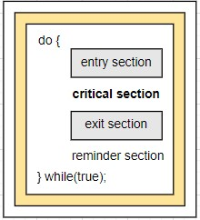 = every critical-section solution must satisfy following 3 requirements - mutual exclusion(exclusively only one process), at any point of time only one process should be present inside critical section - progress(competition is only between the processes those wanted to enter the critical section, other process will not be participating) do not postpone the selection indefinitely - bounded waiting(no live lock, limited waiting to enter critical-section), the waiting time of the process to enter the critical section should be limited after the request = 2 approaches used to handle critical section in OS are - preemptive kernel : allows a process to be removed and replaced while running in kernel mode. this approach is more preferable in real-time programming - non preemptive kernel : does not allow the process to be preempted and it will run until the process exit, block or voluntarily yields control of the CPU # peterson’s solution = software-based solution to the critical-section problem = there is no guarantee that peterson’s solution will work on modern computer architecture but it provides a good algorithmic description of solving the critical section = this solution works only for 2 process which is contesting for critical section. these 2 processes will share 2 variables(flag[2] and turn) = how it works - pi and pj are the 2 processes which is currently executing in their entry sections - let's say the order of execution is pi then pj - pi executes and sets the shared variable 'turn' as j - pj executes and sets the shared variable 'turn' as i - on the next time quanta of pi, 'while' statement will be false and enter its critical section meanwhile pj waits on its 'while' loop - after completing the critical section on pi will set 'flag[i] = false' - on the next time quanta of pj, 'while' statement will be false and enter its critical section meanwhile pi will be on its remainder section = this solution satisfies all 3 requirements 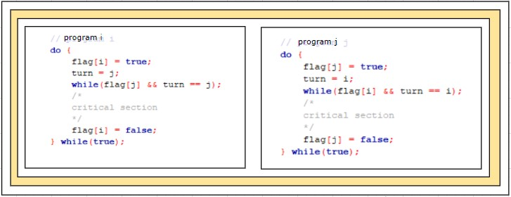 # hardware based solutions = privileged instructions inbuilt in CPU = 2 hardware instructions are - test and set, modify the content of a word - compare and swap, swap content of 2 words = all the above operations are atomic operations = these solution can work for many processes = how 'test and set' solution works - a shared variable called 'lock' will be used and data type will be boolean and initialized to false - first check or test the value of lock variable . if lock = true(1), process will wait . if lock = false(0), process will set lock = true(1) and enter the critical section - after setting lock = 1 then enter the critical section - all other process will be waiting the lock = does it meet the requirements? - satisfies mutual exclusion requirement - does not satisfies bounded waiting requirement 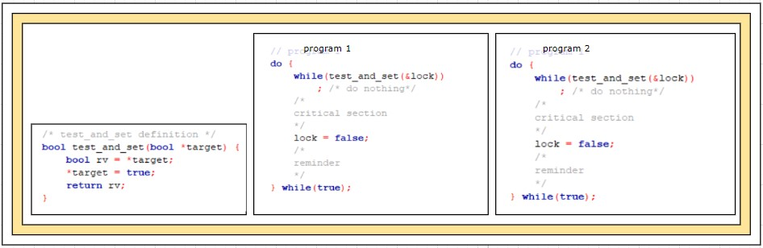 = how 'compare and swap' solution works 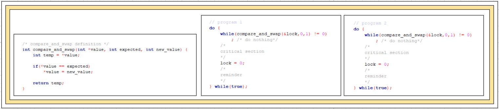 = does it meet the requirements? - satisfies mutual exclusion requirement - does not satisfies bounded waiting requirement # mutex locks = another software based solution = mutex - mutual exclusion = acquire() function acquires the lock and release() function releases the lock = main disadvantage of the above implementation is 'busy waiting' or 'spin lock', since the CPU will be busy of 'spin lock' = advantage of spin lock is that no intermediate context switch is required which is costly = this method is implemented on multiprocessor system where one thread can spin on one processor while another thread performs critical section on another processor = mutex is used on Pthreads 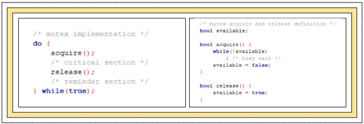 # semaphores = another software based solution = provide more sophisticated way than mutex = this solution make use of one integer variable called semaphore S = 2 types of semaphores - counting semaphores(vast range of numbers) - binary semaphores (0 or 1), can be used instead of mutual exclusion = counting semaphores, initialized to the number of resources = each process wants to use the resource first perform wait() then critical section and signal() = wait() is termed P for test = signal() is termed V to increment 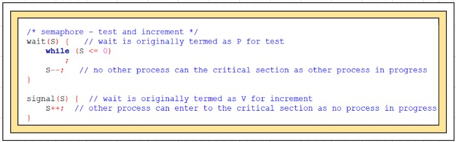 # problems of synchronization = 3 common synchronization problems - bounded buffer problem (producer-consumer problem) - readers writers problem - dining philosophers problem = solution for bounded buffer problem using semaphores - a buffer of fixed number of slots and each one is capable of storing one unit of data - bounded buffer ie fixed buffer size - bounded buffer problem statement . producer must not fill data when the buffer is full . consumer should not remove data when the buffer is empty . simultaneous insert and removal should not happen - producer process - fill/insert data to an empty slot - consumer process - removes data from a filled slot - solution for bounded buffer problem is implemented through 3 semaphores . m(mutex), binary semaphore, value to acquire and release locks . empty, counting semaphore, number of empty slots. initial = total number of slots . full, counting semaphore, number of filled slots. initial = 0 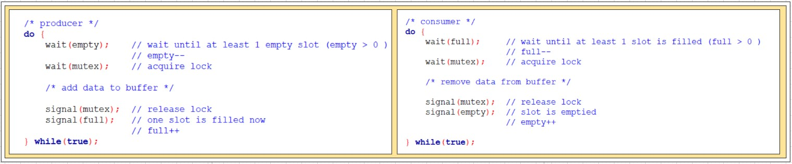 = solution for readers-writers problem using semaphores - readers-writers problem relates to shared object such as a file that is shared between multiple processes - readers-writers problem statement and objective . a shared object can be accessed by 'n' readers, but only one writer at a time - 2 kind of processes . reader processes - only to read . writer processes - read and write - solution is implemented through 2 semaphores and an integer value . readcount, integer variable, how many processes are currently reading the shared object, initial=0 . mutex, binary semaphore, ensure mutual exclusion when the variable 'readcount' is updated. initial=1 . rw_mutex, binary semaphore, ensure mutual exclusion when for writers. initial=1 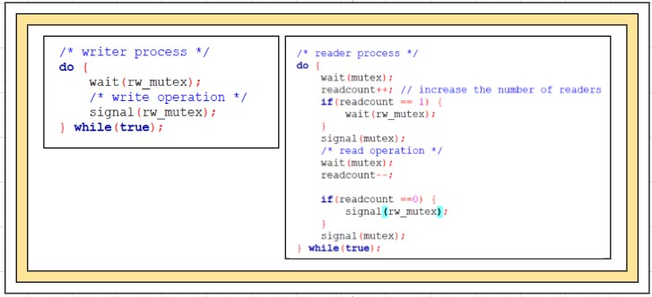 = solution for dining philosophers problem using semaphores - problem statement . allocating limited resources to multiple processes can cause deadlocks and starvation. so we need to build a solution to address that and allocate resources in a synchronized manner - dining philosophers problem is a simple representation of the above problem ie, resource allocation - illustration . 5 philosophers who spend their lives thinking and eating . from time to time a philosopher gets hungry and tries to pick up 2 chopsticks that are closest to her . philosopher picks only one chopstick at a time, and she requires 2 chopstick to start eat . when finish eating, she puts down both chopstick and starts thinking again - philosopher chooses 2 of her adjacent chopsticks. implement this solution via the semaphore . term each chopstick as a semaphore(chopsticks[5]), binary semaphore, all chopsticks initial=1 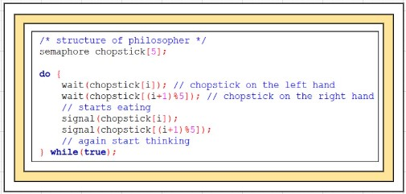 - above semaphore solution wont avoid deadlocks, so remedies are . allow at most 4 philosophers to be sitting simultaneously at the table . pick up the chopsticks only if both chopsticks are available . use asymmetric solution * odd numbered philosopher picks up left then right chopstick * even numbered philosopher picks up her right then left chopstick # monitors = using semaphore mechanism incorrectly can result in timing errors which is difficult to detect = to deal with these kind of errors researchers have developed a high-level language construct - the 'monitor' type = syntax of monitor monitor monitor_name { /* shared variable declarations */ function P1(.....) { ...... } function P1(.....) { ...... } function Pn(.....) { ...... } initialization_code(.....) { ..... } } = the monitor type is an ADT that contains a set of programmer-defined functions that provide mutual exclusion within the monitor = various processes needs to call the functions defined with in the monitor = monitor construct ensures that only one process at a time is active within the monitor = monitor construct is not sufficiently powerful for modeling some synchronization schemes, we may need to use condition variables condition x,y //pseudo code = a condition variable in operating system programming is a special kind of variable which is used to communicate between threads when certain conditions becomes true = operations that can be invoked on condition variable are wait() and signal() x.wait() // suspending an operation x.signal() // resumes a suspended process = example for condition variables written using pthread conditional variables pthread_mutex_t m = PTHREAD_MUTEX_INITIALIZER; pthread_cond_t x = PTHREAD_COND_INITIALIZER; pthread_cond_wait(&x, &m); pthread_cond_signal(&x); = illustrate a monitor based solution deadlock free solution to the dining philosopher problem = this solution imposes the restriction that a philosopher may pick up her chopsticks only if both of them are available monitor diningphilosophers { enum { THINKING, HUNGRY, EATING} state [5]; condition self [5]; void pickup (int i) { state [i] = HUNGRY; test (i) ; if (state [i]!= EATING) self [i].wait() ; } void putdown(int i) { state [i] = THINKING; test ((i + 4) % 5); test ((i + 1) % 5); } void test (int i) { if ((state [(i + 4) % 5] != EATING) && (state [i] == HUNGRY) && (state [(i + 1) % 5]!= EATING)) { state [i] = EATING; self [i].signal() ; } } initialization_code () { for (int i = 0; i < 5; i++) state [i] = THINKING; } } = decide which suspended process to resume within monitor - simple solution is FCFS ordering, process waiting longer served first - condition wait construct, a priority number is stored with name of the process and process with smallest priority number is resumed next x.wait(time) # synchronization examples =
cpu scheduling
# basic concepts
= https://www.quora.com/What-are-the-goals-of-CPU-scheduling ( how computer works)
= CPU scheduling is the process of choosing which process gets the CPU from the ready queue
= scheduling can be termed as the order of process selection
= it is kernel level thread not processes that are in fact being scheduled by the operating system to use CPU
= a process execution consists of cycles of
- CPU execution(CPU burst)
- IO wait(IO burst)
= CPU scheduler
- whenever the CPU becomes idle, the OS must select one of the processes from the ready queue to be executed
- selection of the process is carried out by the short term schedular or CPU schedular
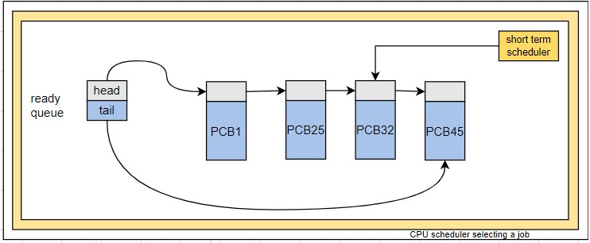
= scheduling methods(preemptive/non-preemptive)
- circumstances for scheduling decisions
. (1) process switches from running to waiting state(waiting for IO request completion or wait() for child process to terminate)
. (2) process terminates
. (3) process switches from running to ready state(interrupt occurs)
. (4) process switches from waiting to ready state(IO completion)
- in 1 and 2 no choice in terms of scheduling OS must select a new process
- in 3 and 4 there is a choice of scheduling
- preemptive, higher priority process will get the preference on CPU allocation(Windows 95,Mac OS X)
- non preemptive, once the process is allocated it will hold on to the CPU till it gets terminated or moved to waiting state(Windows 3.x)
= dispatcher
- dispatcher is a module that gives control of the CPU to the process which is selected by short term schedular
- functions involved are
. switching context
. switching to user mode
. jumping to proper location in the user program to restart that program
- dispatch latency, is the time it takes for the dispatcher to stop one process and start another process
# general scheduling benchmark for comparing CPU scheduling algorithms
= scheduling criteria/benchmark
- CPU utilization
. time that CPU was busy
. 40%, lightly loaded systems
. 90%, heavily loaded systems
- throughput
. number of processes completed per time unit
- turnaround time
. time of submission of a request to the time of completion
. sum of waiting to get into memory + waiting in the ready queue + executing on the CPU + doing IO
- response time
. time from the submission of a request until the first response is produced
- waiting time
. sum of the time spent waiting in the ready queue
= a desirable scheduling algorithm needs to have it is desirable to
- maximize, CPU utilization and through put
- minimize, turnaround time, response time, waiting time
# CPU scheduling algorithms will decide which process in the ready queue allocate to the CPU
= first come first serve scheduling (non preemptive)
- process that request the CPU first gets the CPU first
- implementation is easily managed with a FIFO queue
- the new PCB will be added to the tail of the ready queue
- the CPU will be allocated to the PCB on the head, running process will be removed from the ready queue
- on the negative side, the average wait time can vary significantly if the CPU burst times of the processes vary greatly = shortest job first scheduling
- convoy effect, all the other processes wait for one big process to get off the CPU
- FCFS algorithm is non-preemptive
= shortest job first scheduling
- process that have shortest next CPU burst time will get the CPU(shortest-next-CPU-burst)
- if the next CPU burst time is equal for 2 processes, FCFS scheduling is used as a solution
- difficulty of SJF algorithm is to identify the length of the next CPU burst
- SJF is used frequently in long term scheduling
- in batch systems user specifies the process time limit when he submit the job
- in short term scheduling there is no way to know the length of the next CPU burst
- next CPU burst time is generally predicted as an 'exponential average' of the measured lengths of previous CPU bursts
- estimate[ i + 1 ] = alpha * burst[ i ] + ( 1.0 - alpha ) * estimate[ i ]
- SJF algorithm can be either preemptive or non-preemptive
- preemptive SJF scheduling is sometimes called shortest-remaining-time-first scheduling
= priority scheduling
- a priority is associated with every process
- CPU will be allocated to the process with highest priority
- equal priority processes are scheduled in FCFS order
- SJF is a special case of the general priority scheduling algorithm (process with larger next burst time will have the least priority and vice versa)
- there is no common understanding that a lower number means a higher or lower priority
- priority scheduling algorithm can be either preemptive or non-preemptive
- when a process enters the ready queue with a higher priority its priority is compared to the priority of the currently running process
. a preemptive priority scheduling algorithm will preempt the currently running process
. a non-preemptive priority scheduling algorithm will continue with the currently running process
- major problem with priority scheduling is 'indefinite blocking' or 'starvation'. a process in the ready queue but not getting the CPU
- a steady stream of higher priority processes can prevent a low priority process from ever getting the CPU
- solution for starvation is 'aging'(gradually increasing the priority of the processes that wait in the system for a long time)
= round robin scheduling
- RR scheduling algorithm is designed for time sharing systems
- RR scheduling algorithm is similar to FCFS but preemption is added to enable the system to switch between processes
- a small unit of time is defined 'time quantum' or 'time slice', generally from 10 to 100 milliseconds in length
- new process will attach to the tail of ready queue
- CPU schedular will choose the first process in the ready queue
- set a timer to interrupt after 1 time quantum
- dispatches the process
- if the CPU burst
. is 1 time quantum, the process voluntarily release the CPU
. is more than 1 time quantum, the timer will goes off and this will cause an interrupt to the OS, context switch will be executed and the process will be put at the tail of the ready queue
- round robin scheduling algorithm is preemptive
- most modern systems have
. time quanta ranging from 10 to 100 milliseconds
. context switch time is less than 10 microseconds
- a rule of thumb is that 80% of the CPU burst should be shorter than the time quantum
= multilevel queue scheduling
- we can use multilevel queue scheduling when we can group/level processes like foreground or background processes
- multilevel queue scheduling algorithm partitions the ready queue in to several separate queues
- each process will assign to a queue based on some property of the process, such as memory size, process priority or process type
- each queue has its own scheduling algorithm, for eg, foreground queue is scheduled with RR algorithm and background queue with FCFS algorithm
- in addition, there must be scheduling algorithm among queues, for eg, fixed priority preemptive scheduling
- list of 5 queues in order of priority
1. system processes (highest priority)
2. interactive processes
3. interactive editing processes
4. batch processes
5. student processes (lowest priority)
- a lower priority queue process will run only if all the above queue processes have completed
- preemption of low priority process will happen when a higher priority process enters the ready queue
- algorithm provides a certain portion of time slice among queues, eg, 80% of time for foreground processes, RR algorithm will use among its processes and 20% time for background processes , FCFS algorithm will use among its processes
= multilevel feedback queue scheduling
- most general CPU scheduling algorithm and even most complex
- multilevel feedback queue scheduling algorithm bring some flexibility on multilevel queue scheduling algorithm
- multilevel feedback queue scheduling algorithm allows a process to move between queues for a variety of reasons
- eg, if a process uses too much of CPU time if a process wait too long in the lower priority queue or time quanta exceeds
- this algorithm defined by following parameters
. the number of queues
. scheduling algorithm for each queue
. method used to determine when to upgrade a process to a higher priority queue
. method used to determine when to demote a process to a lower priority queue
. method used to determine which queue a process will enter when that process needs service
# thread scheduling
= kernel is not aware of existence of threads but only process
= kernel picks a process and allocates to the CPU for certain time quantum
= threads are created in run time library
= 'run time system' picks up a thread in case of user level threads
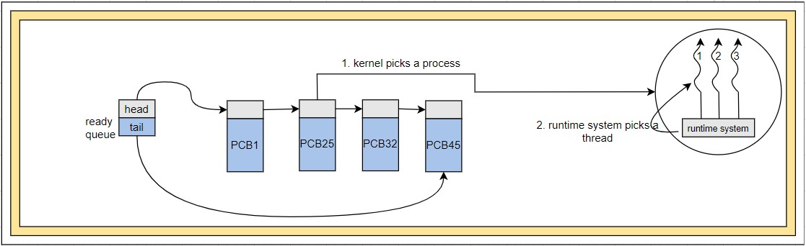
- only threads with in a process can be selected, it is called process contention scope(PCS) or process local scheduling
- selected thread will run until for IO or process schedular context switches
- no clock interrupt in runtime system
- if a thread finishes with in the quantum then start with another thread
- if a thread is blocked for IO, entire process will get blocked
= 'kernel' picks up a thread in case of kernel level threads
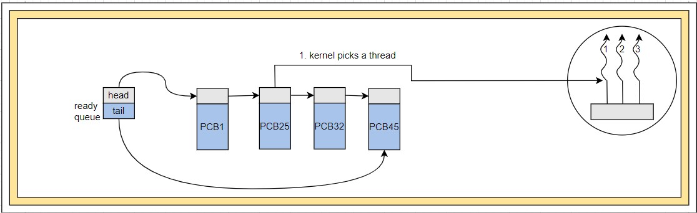
- any threads with in the system can be selected it is called system contention scope(SCS) or system global scheduling
- doing thread scheduling at kernel level requires full context switch
- slower than the user level thread switching
- if a thread is blocked for IO, entire process won't be blocked(can switch to another thread in the same process)
# multiple-processor scheduling
= approaches to multiple processor scheduling
- asymmetric multiprocessing
. one master processor and others are slaves
. one processor(master processor) takes all scheduling decisions, IO processing and other system related activities
. other processors(salve processors) execute user code
. this asymmetric multiprocessing is simple because only one processor access the system data structures and reduces the need of data sharing
- symmetric multiprocessing(SMP)
. each processors are self scheduling
. single common ready queue or private queue for every processors
. virtually all modern OSs support SMP
= processor affinity
- most SMP systems try to avoid migration of processes from one processor to another due to the high cost of invalidating and repopulating of data in caches
- processor affinity, most SMP systems attempt to keep a process running on the same processor
- process will have an affinity for the processor in which it is currently running
- 2 forms of processor affinity
- soft affinity, OS will attempt to keep a process on a single processor, but it is possible to for a process to migrate between processors
- hard affinity, OS will force the process to run on a subset of processors
- many systems provide both forms of processor affinity
= load balancing
= multicore processors
# real-time cpu scheduling
# operating-system examples
# algorithm evaluation
# extra
= CPU scheduler will choose a process from ready queue
×

= dispatcher is the module that gives control of the CPU to the process selected by the short term scheduler
= 2 scheduling methods are
- preemptive, when a higher priority process reaches the ready queue, the currently running process moves out from the CPU and the higher priority process gets the CPU cycle
- non preemptive, once the process is allocated it will hold on to the CPU till it gets terminated or moved to waiting state
 = timer, main task of a timer is to interrupt the CPU after a specific period of time
= eg, working of timer
- CPU will have a hardware timer that fires an interrupt every X milliseconds
- OS will initialize a counter with the amount of time(X) that a program is allowed to run
- for every clock tick the counter is decremented by 1
- once the counter becomes negative, timer interrupt fires and interrupt handler will make the CPU start executing another process(or thread)
= process, is a running picture of a program or running instance of a program
= thread, a process contain multiple flow of execution called multi threads
= for a linux kernel there is no concept of thread. each thread is viewed by kernel as a separate process
= LWP are threads in the user space that is an interface for user level thread to kernel level thread
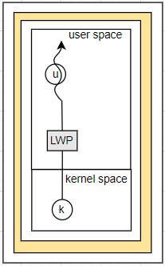
= NUMA,non uniform memory access, CPU will have faster access to some part of main memory than to other parts
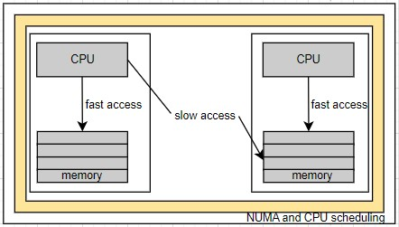
__________removed lines from PCS and SCS
= kernel level CPU scheduling algorithms will decide which process in the ready queue allocate to the CPU
= scheduling of threads involves in 2 levels
- scheduling of user level threads to kernel level threads via lightweight process
- scheduling of kernel level threads by the system scheduler
= 2 controls needs to be specified for user level threads
- contention scope (competition among the user level thread to access kernel level threads)
- allocation domain
= contention scope can be classified as
- process contention scope(PCS) or process local scheduling
. contention among threads with in the same process
. highest priority thread to access the kernel via LWP
. application developer defines the priority
- system contention scope(SCS) or system global scheduling
. contention among all the threads in the system
= to run on CPU user level threads are mapped to a kernel level thread or light weight process(LWP) directly or indirectly
= kernel level threads are being scheduled by OS
= user level threads are managed by thread library
= contention scope refers to the scope in which threads compete for the use of physical CPUs
= 2 basic ways of scheduling 'threads' in OS are
- process contention scope(PCS) or process local scheduling
. thread library uses PCS to schedules user level threads to run on an available LWP
. the contention takes place among the threads belongs to the same process
. PCS is done according to the priority, user level threads priority is set by the programmer
. on many to one and many to many models uses PCS
- system contention scope(SCS) or system global scheduling
. kernel uses SCS to decide which kernel thread uses LWP to get the CPU
. the contention for CPU is among all threads on the system
. one to one model only uses SCS
= Pthread scheduling
- POSIX provide API that allows PCS or SCS during thread creation
. PTHREAD_SCOPE_PROCESS for PCS scheduling
. PTHREAD_SCOPE_SYSTEM for SCS scheduling
= timer, main task of a timer is to interrupt the CPU after a specific period of time
= eg, working of timer
- CPU will have a hardware timer that fires an interrupt every X milliseconds
- OS will initialize a counter with the amount of time(X) that a program is allowed to run
- for every clock tick the counter is decremented by 1
- once the counter becomes negative, timer interrupt fires and interrupt handler will make the CPU start executing another process(or thread)
= process, is a running picture of a program or running instance of a program
= thread, a process contain multiple flow of execution called multi threads
= for a linux kernel there is no concept of thread. each thread is viewed by kernel as a separate process
= LWP are threads in the user space that is an interface for user level thread to kernel level thread
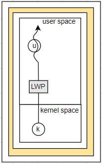
= NUMA,non uniform memory access, CPU will have faster access to some part of main memory than to other parts
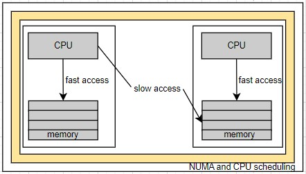
__________removed lines from PCS and SCS
= kernel level CPU scheduling algorithms will decide which process in the ready queue allocate to the CPU
= scheduling of threads involves in 2 levels
- scheduling of user level threads to kernel level threads via lightweight process
- scheduling of kernel level threads by the system scheduler
= 2 controls needs to be specified for user level threads
- contention scope (competition among the user level thread to access kernel level threads)
- allocation domain
= contention scope can be classified as
- process contention scope(PCS) or process local scheduling
. contention among threads with in the same process
. highest priority thread to access the kernel via LWP
. application developer defines the priority
- system contention scope(SCS) or system global scheduling
. contention among all the threads in the system
= to run on CPU user level threads are mapped to a kernel level thread or light weight process(LWP) directly or indirectly
= kernel level threads are being scheduled by OS
= user level threads are managed by thread library
= contention scope refers to the scope in which threads compete for the use of physical CPUs
= 2 basic ways of scheduling 'threads' in OS are
- process contention scope(PCS) or process local scheduling
. thread library uses PCS to schedules user level threads to run on an available LWP
. the contention takes place among the threads belongs to the same process
. PCS is done according to the priority, user level threads priority is set by the programmer
. on many to one and many to many models uses PCS
- system contention scope(SCS) or system global scheduling
. kernel uses SCS to decide which kernel thread uses LWP to get the CPU
. the contention for CPU is among all threads on the system
. one to one model only uses SCS
= Pthread scheduling
- POSIX provide API that allows PCS or SCS during thread creation
. PTHREAD_SCOPE_PROCESS for PCS scheduling
. PTHREAD_SCOPE_SYSTEM for SCS scheduling
deadlocks
system model
deadlock characterization
methods for handling deadlocks
deadlock prevention
deadlock avoidance
deadlock detection
recovery from deadlock
summary
part three memory management
main memory
background
swapping
contiguous memory allocation
segmentation
paging
structure of the page table
example: intel 32 and 64-bit architectures
example: arm architecture
summary
virtual memory
background
demand paging
copy-on-write
page replacement
allocation of frames
thrashing
memory-mapped files
allocating kernel memory
other considerations
operating-system examples
summary
part four storage management
mass-storage structure
overview of mass-storage structure
disk structure
disk attachment
disk scheduling
disk management
swap-space management
raid structure
stable-storage implementation
summary
file-system interface
file concept
access methods
directory and disk structure
file-system mounting
file sharing
protection
summary
file-system implementation
file-system structure
file-system implementation
directory implementation
allocation methods
free-space management
efficiency and performance
recovery
nfs
example: the wafl file system
summary
i/o systems
overview
i/o hardware
application i/o interface
kernel i/o subsystem
transforming i/o requests to hardware operations
streams
performance
summary
protection
goals of protection
principles of protection
domain of protection
access matrix
implementation of the access matrix
access control
revocation of access rights
capability-based systems
language-based protection
summary
security
the security problem
program threats
system and network threats
cryptography as a security tool
user authentication
implementing security defenses
fire walling to protect systems and networks
computer-security classifications
an example: windows 7
summary
virtual machines
overview
history
benefits and features
building blocks
types of virtual machines and their implementations
virtualization and operating-system components
examples
summary
distributed systems
advantages of distributed systems
types of network based operating systems
network structure
communication structure
communication protocols
an example: tcp/ip
robustness
design issues
distributed file systems
summary